因果联系是世界万物之间普遍联系的一个方面，科学研究的一个重要任务就是要把握事物之间的因果联系，以便掌握事物发生、发展的规律。通过观察和实验，合理地归纳，发现因果关系，并把其上升成定律定理，形成系统的知识体系，这就是经验科学形成的过程。
因果分析就是分析事物之间的因果关系，并用因果来解释一个事物，探究某一事物的来源、事物的发展和事物的最终走向。
因果联系是指原因和结果之间的联系。如果一个现象的出现必然引起另一个现象的出现，那么，这两个现象之间就有着因果联系。
（一）因果关系的特点
因果关系是原因导致结果的关系，因是能产生一定后果的原因，果就是由一定原因产生的结果。例如，加热和物体体积膨胀是两个互相联系的现象，只要加热就会引起物体体积的膨胀。在这里，加热是物体体积膨胀的原因，而物体体积膨胀则是加热的结果。
因果关系的主要特点有：
因果关系是普遍的关系，作为原因的事件必然导致作为结果的事件。普遍性是因果关系的一个性质，因果关系意味着它在相应的条件下总会出现。因果联系是完全确定的，任何现象都有其因，也有其果，且同因（是指所有的原因）必同果，即在同样的条件下，同样的原因必然产生同样的结果。例如，在通常的大气压力的条件下，把纯水加热到100摄氏度，它就必然会产生气化的结果。
共存性指原因和结果总是共同变化的，原因和结果之间在时空上总是相互接近的。共存性表现为两个现象总是共同出现的关联性，比如，温度到达0摄氏度以下总是和水结冰的现象关联，这已经是对这种关联的普遍性的归纳，而最后结论“所以，温度到达0摄氏度以下将引起水结冰”，是比这个关联关系的更进一步的推断。
所谓的先因后果，就是指原因和结果在时间上是先后相继的，原因总在结果之前，而结果总是在原因之后。因此，我们在探求因果联系时，只能从先行的情况中去找原因，从后行的情况中去找结果。
因果关系往往具有先后性，但是具有先后性不一定具有因果关系。如果只是根据时间上前后相继的两个现象之间的表面特征就断定两个现象之间有因果联系的结论，那么，这就犯了 “以时间先后为因果” 的错误，这属于一种“轻断因果”的错误。例如，白昼和黑夜，在时间上虽是先后相继的，但它们之间并不具有因果联系，它们都是由于地球自转和绕太阳旋转所引起的结果。又如，闪电总是在雷鸣之前发生，但是闪电并不是雷鸣的原因，只是由于光速远远大于声速。现在我们都知道闪电和雷鸣有一个共同原因，就是云层放电。“以先后为因果”是许多迷信、错误信念的根源。比如，“我吃了那个绿苹果之后很不舒服，我发誓再也不吃任何绿苹果了!”。
因果联系是多种多样的，固然有“一因一果”，但更多的时候是“多因一果”，有时出现“一因多果”，还有时出现“多因多果”。人们在探求因果联系时，特别应当注意复杂现象的构成原因或结果。
“多因一果”关系是指一个现象的产生是多种原因引起的。
“一因多果”关系是指一个原因引起多种结果。
“多因多果”关系实际上是一因一果关系的复合。
（二）因果关系的解释
“解释”一词有许多含义，这里，我们在解释事物成因的意义上使用解释这个词，仅限于因果解释。
在每天的思考中，思考事情的原因是至关重要的。在了解事物的原因时，首先需要对事物的成因做出解释。了解事情的成因可以消解迷惑，我们常常根据谨慎思考的结果来做出决定，并引导我们的行动。
【案例】
塞梅尔魏斯的“微粒”假说
匈牙利的塞梅尔魏斯1846年到1850年在维也纳综合病院的第一产院任医师。他在维也纳工作时期，产褥热是对产妇威胁很大的疾病。在第一产院（医学生的实习医院）的产妇和新生儿因产褥热而死的死亡率高达18%，培训接生员的第二产院中产妇和新生儿因该病死亡者明显少于第一产院（死亡率为2. 7%），甚至在家中分娩的妇女患产褥热的机会都少于第一产院。
当时产褥热病因不明。他观察证明空气中“有害气体”、产妇恐惧心理、便秘等，与发病无关。改变分娩姿势，推迟哺乳期等，都不能控制发病。1847年他一位当法医的友人做病理解剖时，手指不慎割破被感染，患败血症死亡，尸体检查发现其病理改变，与死于产褥热的妇女非常相似。
这件事启发了他，他发现医生和实习生经常做完病理解剖后，不洗手就进病房为产妇检查或接生，推断产褥热是由于医生不洁净的手或产科器械将某种传染性的物质带进产妇创口所致。由于不知道细菌、微生物的概念，塞梅尔魏斯便假想有一种未知的“尸体微粒”沾在做了尸体解剖的医学院学生的手上，在他们随后检查产妇时，这种“尸体微粒”传人她们的血中，引起了感染，导致产褥热。这也解释了为何第二产院的死亡率低：助产士不学习尸体解剖课程（虽然她们也有别的可能使手污染）。
自然，根据这个接生医师的脏手导致产褥热的因果解释，阻止它的办法就是清除。这也正是检验这个假说的方法。为此，他命令医学生检查产妇之前，一定要用漂白粉溶液洗手，实施这种措施后一个月感染率大为下降。不久，他的产科消毒法在匈牙利得到公认。他于1861年出版《产褥热的病因、概念及预防》。书中以大量的统计资料阐明、论证他的发现和理论。他将著作寄给外国杰出的产科医师及医学学会，但他的概念却受到许多权威的反对。他认为感染性“微小颗粒”能够附着于指尖，这也不被当时的医学理论接受。医生其实也经常用肥皂洗手，他们的手明显看来是干净的。那种看不见的、如此微量的微粒怎么能产生这样大的损害？有的医生还认为，实践的成功并没有证实塞梅尔魏斯的因果假说，有可能那几个月的死亡率减少是出于别的偶然因素，并没有足够的统计信息排除这些可能。1865年塞梅尔魏斯精神失常，后因手术中误伤右手，伤口感染而逝世。
就在塞梅尔魏斯含冤去世不久，新的致病医学理论登上大堂，带着越来越多的实验证据，证明了细菌存在、传播、致病的机制。这个对塞梅尔魏斯来说来得太迟的新理论，就是1864年法国的路易斯·巴斯德的细菌学说，巴斯德用实验证明微生物可以在生物体内繁殖生长并致病，他还发明了巴氏灭菌法来杀死细菌的营养体。德国的罗伯特·科赫在1870年有力证明了炭疽杆菌就是炭疽热的病因。英国外科医生约瑟夫·李斯特在1865年论证缺乏消毒措施是手术后发生感染的主要原因，并在1867年发明了外科消毒技术，大大减少了创伤化脓和手术后的死亡率。到此，人类确认了致病的细菌原因和机制，理解了塞梅尔魏斯“微粒”假说的因果机制。基于塞梅尔魏斯的巨大贡献，一百年后， 1965年，联合国宣布此年为塞梅尔魏斯年。（根据百度百科整理）
因果关系有时是比较复杂的，对事物之间的因果关系必须做出合理的解释。
比如，一因多果是一种现象可能会导致多种结果。一般情况，有A应该有B，但目前结果是有A却有非B。为了解释这种矛盾，往往要注意一因多果的现象。即：尽管A应该引起B，但由于A也引起了另一现象C，而C又会导致非B。结果是A导致了B和C，而B和C的综合效应是非B。这样就解释了矛盾。
因果联系在我们的现实生活中扮演着重要的角色，为了对环境进行控制性操作，我们必须拥有某种因果连接的知识。对历史和现实的理解需要追溯它们的原因，对未来的预见要求我们把握现实的可能发展结果。
（一）原因的条件分析
日常语言中的“原因”是有歧义的，往往由于模棱两可、含混不清而使得交流受到了严重影响。当“原因”一词在日常中使用时，有时指的是充分条件原因，有时指的是必要条件原因，而在另一些场合下，可能指的是充分且必要条件原因，也可能是既非充分也非必要原因。我们可以运用系统的方法，来探求不同条件意义上的原因，这就构成了以一个因果陈述为结论的论证。
为了澄清“原因”一词词义的这种含混性，采用充分、必要条件的语言就很有用了。
用充分和必要条件只能表示因果关系的部分含义，比如它不能表达因果机制的含义。
说P是Q的原因，如果用条件句来表示，可以是这样的一些含义中的一种：
（1）充分条件原因
所谓充分条件就是仅有这条件就足以带来结果，无需考虑别的条件了。P是Q的充分条件是指：如果P出现， Q一定出现。相应地，充分条件原因是对于给定的结果而言能够独自产生这一结果的一个事实或条件。
当满足下列条件时， P是Q的充分条件原因（P、Q代表事件或属性）：
①任何时候， P出现时， Q也出现;
②P不出现时， Q可出现，也可不出现;（即P不一定是唯一可以产生Q的原因）
③从未有P出现时， Q却不出现。
这种关系可图示如下：（其中，蕴含符号“→”表示“必然得出”）
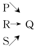
由图可知， P、R、S都可分别独立导致Q，所以，在没有P时并不一定没有Q（因为有R或S也会有Q），在有Q时也并不一定就有P（因为Q可由R或S所致）。
充分条件原因属于“并联现象”。如果几个现象中只要有一个出现，结果就必然出现，那么这些现象就称为“并联现象”。并联开关只要有一个“由关到开”，即可出现灯泡“由灭到亮”的结果，所以对于灯泡“由灭到亮”的结果来说，并联开关的每一个“由关到开”的现象，就属于并联现象。
我们把在所有情况下都能导致其结果产生的原因称为实质性原因，充分原因属于实质性原因。
充分条件原因的意义在于，当我们期待一个现象出现时，通常情况下就要寻找一个充分条件原因。通过干预，使得这个充分条件出现，则会使我们所期待的现象也出现。例如，当我们说在炎热的夏天，我们期待凉爽下来，去游泳就行。这是指游泳本身就可以使我们凉爽下来，但其他的一些方法也同样有效，比如冲凉水澡、进入空调房，等等。
分析：以上论述表明，“商品通过无线广播电台进行密集的广告宣传”是“迅速获得最大程度的知名度”的充分原因，也即，只要无线广告宣传就足够了，不需要其他的方法，就可获得知名度。因此，可推出的结论是，在青崖山区，某一商品为了迅速获得最大程度的知名度，除了通过无线广播电台进行密集的广告宣传外，不需要利用其他宣传工具做广告。
（2）必要条件原因
所谓必要条件就是没有这个条件，结果一定不会产生。P是Q的必要条件是指：如果P不出现， Q一定不出现。相应地，必要条件原因是这样一个事实，对于给定的结果而言，必然有这一个事实存在，或者说没有这一事实这个结果则不可能产生。
当满足下列条件时， P是Q的必要条件原因：
①任何时候， P不出现时， Q不出现;
②P出现时， Q可出现，也可不出现; （虽然有了P但不一定就产生Q）
③从未有P不出现时， Q却出现。
这种关系可图示如下：
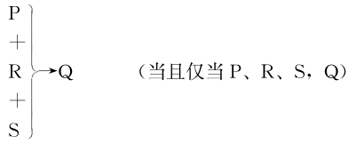
由图可知，要使Q成立，需P、R、S都同时成立。所以，仅有P，不一定有Q（因为也许没有R或S）;没有Q也不一定就没有P（因为没有R或S时，也就没Q）。
必要条件原因属于“串联现象”。如果几个现象必须全部出现，结果才出现，即对于结果来说（注意，是对于特定结果来说的），这些现象缺一不可，那么这些现象就称为“串联现象”。在一个电路中，串联开关的每一个都必须“由关到开”，才会出现灯泡“由灭到亮”的结果，所以对于灯泡“由灭到亮”来说，每一个串联开关“由关到开”的现象就属于“串联现象”。
必要条件的意义在于，当我们想阻止一个现象出现时，通常情况下要寻找一个必要条件原因。通过干预，使得这个必要条件不出现，则会使我们欲阻止的那个现象也不出现。
忽视这种意义的原因将导致无谓的争论。比如对人来说，成功的真正原因是遗传的基因，还是后天的环境、教育、个人的努力、运气等等，其实这些都起作用。当这几个因素都不能独自解释成功的时候，这些因素都是本质的，都是成功的必要条件。
为了淘汰某个现象，人们只要找到某个对该现象的存在为必需的条件，然后将该条件淘汰就可以。医生努力寻找何种微生物是某个疾病的“原因”，以便开出杀灭那些微生物的药物，从而治愈该疾病。那些微生物被认为是该疾病的原因，是说它们是疾病的必要条件，因为如果没有它们便不会有该疾病。
充分条件和必要条件是有关系的。一个事件出现，应至少有一个充分条件出现或所有必要条件出现。对于给定的结果，有时我们发现一组事实，其中的每一个都对这个结果产生有必要性，而且这些事实结合起来就会成为这一结果产生的充分条件。即所有必要条件的齐备就是实际导致该事件发生的充分条件。
（3）充要条件原因
所谓充要条件就是充分且必要条件，是指仅有这条件就足以带来结果，没有这个条件就一定不会产生这个结果。P是Q的充要条件原因就是指这样一个事实，对于给定结果的发生来说，这一事实既是充分条件，也是必要条件。
当满足下列条件时， P是Q的充要原因：
①任何时候， P出现时， Q一定出现;
②任何时候， P不出现时， Q一定不出现;
③从未有P出现时， Q却不出现; P不出现时， Q却出现。
充要条件原因的意义在于，当我们想阻止一个现象出现或期待它出现时，掌握了它的充要条件原因，我们就有了强有力的手段。但是，很显然，充要条件原因的获得是以充分条件原因和必要条件原因的获得为基础的。
（4）既非充分也非必要条件原因
“原因”一词有另外一个普遍的但不精确的用法，给定现象与某些后果关联，它可能就是原因。我们把在总体中倾向于产生某一结果的原因称为统计性原因，或称随机性原因。这些原因往往既非结果的充分条件，也非必要条件。
我们仅能够在“必要条件”的含义上合法地从结果中推出原因。并且，我们仅能够在“充分条件”的含义上合法地从原因中推出结果。当我们从原因推论到结果并且从结果推论到原因时，原因必定是在既充分又必要条件的意义上使用的。但原因在很多情况下，是结果产生的既非充分也非必要条件。
既非充分也非必要原因是指P是Q产生的一个因素。虽然P既不是Q产生的充分条件，也不是它的必要条件，即有P不一定产生Q，没有P也不一定就不会产生Q，但P的存在是Q“更可能”出现的一个因素。这个情况在统计的因果推理上很普遍。
既非充分也非必要条件原因的意义在于：作为某个现象发生过程中的关键因素，即在现有的条件之下造成该事件出现或不出现的差别的事件或行为是什么。
现实生活中的因果关系是非常复杂的，我们讲的因果关系一般是实验室情况，排除了其他背景因素的干扰。现实生活中原因可能是充分条件，也可能是必要条件，也可能是既非充分也非必要条件。
以下图为例：
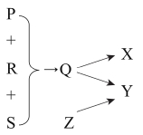
图中P可以看成Y的原因，属于既非充分也非必要条件原因。
一方面，有P不一定有Q（可能没R和S），所以不一定导致Y。
另一方面， P有助于导致Y（有P有助于导致Q，从而导致Y）。
【案例】
燃烧的条件
燃烧理论认为 “只有存在氧气，物质才能燃烧”。意思是当氧气不出现时，燃烧必定不出现;当氧气出现时，燃烧可能出现，也可能不出现（温度不够）;我们从来不会遇到没有氧气而燃烧的情况。因此，氧气就是燃烧的必要条件原因。
但随着科学的发展，人们发现，自然界中存在没有氧气也可燃烧的情况。只要是任何发光、发热、剧烈的氧化还原反应，都可以叫燃烧。换句话说，某些物质可以代替氧气在燃烧中的作用，比如，氯气可以代替氧气使氢气、铁丝等可燃物燃烧。二氧化碳在镁条燃烧中便代替了氧气的位置。除了镁条，金属钠等活泼金属均可以在二氧化碳中燃烧。这也解释了二氧化碳灭火器不能用于扑灭钾、钠、镁等金属燃烧形成的火灾的原因。所以，在面对火灾时，一定要确定可燃物的种类，选择正确的灭火方式，防范不当的灭火方法造成更大的损害。
可见，氧气是燃烧的既非充分也非必要条件原因。
（二）混淆原因的谬误
因果论证是对因果关系的运用或确定，推理的前提或结论涉及对因果关系的认识。如果对原因的类型认识错误，就会犯“混淆原因”的谬误，具体包括：
（1）将某一结果产生的一个充分原因当作导致这一结果产生的必要原因。
（2）将某一结果产生的一个必要原因当作导致这一结果产生的充分原因。
（3）将某一结果产生的某一个原因或者部分原因当作导致这一结果产生的全部原因（即充分原因）。
（4）将某一结果产生的必要原因或充分原因当作导致这一结果产生的唯一原因（即充要原因）。
如“下雨”是“地湿”（指的是露天的地面）的充分条件，即下雨必然引起地湿，而非必要条件，地湿不一定是下雨引起的（也许是洒水车洒了水）。将充分条件等同于必要条件便可荒谬地得出“若地湿了，那么下雨了”。
分析：上述论证的缺陷是把充分原因误认为唯一的，也即误认为是充要原因。“麻醉师的良好训练能降低麻醉造成的死亡事故”这一事实不能成为否定“监控设备也能降低麻醉造成的死亡事故”的充足理由。
分析：上述论证的推理是有缺陷的，因为即使“不足六个月的婴儿与年轻的成人在迅速分辨相似语音上的差别”和“生理上的听觉能力在婴儿期之后开始退化”都是事实，但是，题干并没有给出证据证明“听觉的生理退化”是造成“分辨相似语音能力降低”的充分原因。
分析：上述论证的理由是：私人汽车业的发展造成了洛杉矶现有的城市风貌。可见，“私人汽车业的发展”是“造成现有城市风貌”的充分原因。
（三）因果关系与条件关系
条件关系与因果关系既有联系又有区别，其主要区分如下：
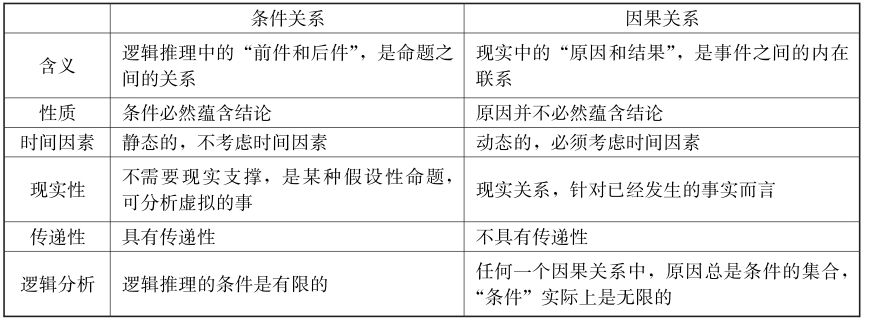
（1）含义的区分
条件关系指的是逻辑推理中的“前件和后件”，因果关系指的是现实中的“原因和结果”。条件关系不等于因果关系。例如，在逻辑上，已婚男子是男子的充分条件，这意思是说如果“某人是已婚男子”为真，“这个人是男子”就不可能假。但是，已婚男子并不是男子的原因。
（2）性质的区分
条件关系属于意义蕴含关系，即思想中命题的逻辑蕴含关系。演绎推理中，条件必然蕴含结论。因果关系属于对客观事实的某种认识。因果关系的部分性质可以表达为蕴含关系，所以，可以用条件句来表达，但因果关系的陈述不等于条件句。在因果关系中，原因并不必然蕴含结论，而只有在“条件”都已经具备的情况下，原因的出现才引起了结果的发生。
现实生活中发生的每一个因果关系都是具体的，都是特定的原因引起了特定的结果。只有在实验室条件下（即在严格限定条件的背景下），原因和结果的关系才是确定不变的。相同的原因必然引起相同的结果，不同的原因引起不同的结果，同样，“同果必然有同因”“异果必然有异因”，这一原理也只有在实验室条件下才是有效的。
（3）时间因素的区分
条件关系是静态的，原因与结果都是动态的。条件关系与因果关系的最根本的区别是，逻辑推理不考虑时间因素，而因果关系却必须考虑时间因素。
因果关系表示原因先于结果出现或者和结果同时出现，原因不可能在结果之后。但条件句可以没有这样的时间要求。比如说“如果路没有湿，那么天没有下雨”，这个条件句的前项其实是时间在后的事件。
（4）现实性的区分
因果关系是现实关系，只有在原因现象和结果现象已经发生之后，我们才说，原因A和结果B之间存在“因果关系”。因此，因果关系更多地是针对已经发生的事实而言。
条件关系不需要任何现实性做支撑，是某种假设性命题，是一种“理论”推导，逻辑推理的条件就必然蕴含结论，可以分析未发生的事，未来的事，虚拟的事。
（5）传递性的区分
条件关系具有传递性，若A→B，并且B→C，则A→C。
但是因果关系却不具有这种传递性。即A是B的原因，并且B是C的原因，却不能必然得出A是C的原因。比如，你的朋友的朋友，不一定是你的朋友。
（6）逻辑分析
条件关系与因果关系既有联系，又有区别。这两者的联系在于存在交集，一个论述，可能同时存在条件关系与因果关系。这两者的区别关键在于在什么意义上使用，主要取决于论述者的思维意图。如果我们能从逻辑推理的角度评估推理的有效性，那它们就可以在条件关系的意义上使用;如果我们能从因果关系的角度分析因果主张，那它们就可以在因果关系的意义上使用。
包含“如果……那么……”等连接词的陈述句一般都具有条件关系，而是否存在因果关系需要具体分析。
哲学上把现象和现象之间那种“引起和被引起”的关系，叫作因果关系，其中引起某种现象产生的现象叫作原因，被某种现象引起的现象叫作结果。如果现象A的存在引起了现象B的发生，我们就说A是导致B的原因， B是A所引起的结果。
但在现实生活中，人们对“引起”和“被引起”却有大不相同的看法，结果出现了许多复杂的因果关系表述形式。但是表述越是复杂，越容易出现模糊和混乱，给科学地认识因果关系造成困难。因此，建构因果关系的模式非常有必要。
（一）因果关系的传递
原因总是发生在结果之前，而不是在结果之后。时间上的先后对于区分原因和结果来说是非常重要的一个因素。
因果链条是指包含三个以上因果的传递关系，传统上人们将它们称为遥远的和最近的原因。几个事件组成的一个因果序列或链条： A引起B， B引起C， C引起D， D引起E，E引起F。
为与蕴含符号“→”以作区分，原因引起（导致）结果，“引起”用“”表示。上述因果链条可表示为： A B C D E F。
此时我们将F称为先行事件的结果。其中最近的即E，为F的最近的原因，而其他的为F越来越遥远的原因： A比B遥远， B比C遥远。
因果链条可能包含实质性的因果传递关系，即实质性的因果链条;也可能不包含实质性的因果传递关系，即虚假的因果链条。
因果关系具有相对性，即一个现象对于某现象来说是结果，但对于另一现象来说又是原因。例如，房屋倒塌是地震的结果，又是导致人员伤亡的原因。因果关系的相对性，使事物之间可以形成一个没有起点和终点的因果链条。实质性因果链条的形成关键在于这种因果关系能传递并直到最后仍然使因果关系得以保持。
真正的因果链条指实质性的因果传递关系，这时，远因（遥远的原因）可能就是结果发生的“根本原因”。
分析：以上论述的因果链条为：海水升温海水含氧量下降防冻蛋白变性沉积于血管血管供血不足鱼的寿命缩短该种鱼类的生存面临巨大挑战。
分析：以上论述的因果链条为：抗生素加在饲料中牲畜产生耐药细菌肉食品被耐药细菌感染人们食用后使得人体内的耐药菌存在。
分析：这道难题的答案就是拉上窗帘就可以了!因为这一长串因果链条具有实质性的因果传递关系。
“错否因果”的谬误往往涉及间接原因或间接因果，指的是对表面上不相干或关系不紧密的两个现象，就断定其不存在因果关系而事实上存在因果关系的谬误。在自然和社会生活中，对表面上不相干或关系不紧密的两个现象，如果用联系的眼光看问题，深入分析下去，有时候会发现在它们的背后存在着间接的因果关系，排除了表面现象的迷惑，就更加接近了事物的本质。
下面列出几种常见的“错否因果”谬误：
（1） A是B的原因，所以A就不是C的原因
而事实是： B导致了C，从而A B C形成因果链条，所以， A是C的间接原因。
（2） A是C的原因，所以B就不是C的原因
而事实是： B导致了A，从而B A C形成因果链条，所以， B是C的间接原因。
（3） A和B貌似不相关，所以， A不是B的原因
而事实是： A导致了C，而C导致了B，从而A C B形成因果链条，所以， A是B的间接原因。
分析：上述论证是，因为海豹很少以鳕鱼为食，所以，不可能是海豹数量的大量增加导致了鳕鱼数量的显著下降。
分析：上述论证是， P（温度模式）导致了Q（干旱），因此， R（全球变暖）不能导致Q（干旱）。
分析：上述论证是，腐烂物质是山湖酸性的最主要来源，因此，减少酸雨不会显著地降低山湖的酸性。
（二）虚假的因果链条
虚假的因果链条则不包含实质性的因果传递关系。
因果关系并不是一定能传递的，即结果的原因的原因，不一定是结果的原因。若把原因的原因看作结果的原因，一切事物的最终原因就都是自然界本身。这样理解因果关系，就丧失了研究的意义。如果严格套用因果关系定义，可以看到这些理解并不符合因果关系定义。从虚假的因果链条中我们不能逻辑地推出首项和末项一定具有因果关系，这时，远因（遥远的原因）就不是结果发生的“根本原因”。
若因果链条不包含实质性的因果传递关系而断定其具有因果关系，那就会犯“诉诸远因”或“滑坡论证”的谬误。“诉诸远因”与“滑坡论证”都属于假因果谬误，广义上可看成同一类谬误，若要区分的话，“诉诸远因”是往过去源头的方向错误地寻找根源;而“滑坡论证”是往未来的方向错误地预测结果。
诉诸远因是指论证中忽视关键的直接因素在原因链条中的影响，而把较为遥远的某个因素看作直接原因，或者忽视其他因素在原因长链中的影响而诉诸遥远的单一因素的谬误。
滑坡论证也叫滑坡谬误，是基于一系列未确证的假设对事件做出的预测。滑坡论证总是从论证者接受的一个前提开始，通过小的步骤，经过一个论证链，逐渐地推进到一个灾难性的最终后果。显然，这种论证，随着论证一步步推进，其确证性却一步步下降，最后，前提和结论的联系往往变得十分微弱，甚至毫无关系。因此，我们形象地把这种推理谬误叫作滑坡论证。这也是因为把非传递性关系看作具有实质性的传递关系所导致的。
通俗地讲，滑坡论证谬误是利用一个看似内在密切相关的推理链条，一步步推理下去，从而在论证链条两端关系较远或毫无关系的两个命题之间建立直接因果联系的谬误。事实上，这个链条往往是不确定的，缺乏足够理由的。滑坡谬误，往往不断地从程度上递增或者递减，最后完全偏离原先的论题。避免滑坡谬误的最好方法就是，每一步的论证都拿出充分的论据，而不能忽略条件地连锁推理。
A可能导致B， B可能导致C， C可能导致D， D可能导致E， E可能导致F。因此，如果A出现，可能导致F出现。而F是不能接受的结果。所以，不应让A出现。
声称某事之后将会发生一连串通常是可怕的后果，但却并无充分证据支撑该推论。这样的推论事先假定，只要我们踏上了“滑坡”，就不可能中途停住，于是就必定会一路滑跌到沟底。
根据一系列预见而进行断定时，含有如下这样的前提：
A0可能会导致A1；A1可能会导致A2；A2可能会导致A3；…；可能会导致An：
A0 A1 A2 A3…An
从论证者接受的一个前提开始，通过小的步骤，经过一个论辩链，逐渐地推进到他并不接受的事物。
第一步前提： A0被公开考虑为产生某个东西的提议。
递归前提：实现A0将可能导致（在我们所了解的环境中） A1， A1将导致A2，依此类推，导致整个序列A2，…， An。
坏结果前提： An是可怕的（灾难性的、坏的）结果。
结论： A0不应被产生。
CQ1.在A0与An相连结的序列中，什么干涉建议实际上被给出了？
CQ2.为了使事件序列是似真的，哪些其他步骤需要填充进去？
CQ3.该序列中最弱的连结是什么？对它应该提出一个事件会真的导致另一个事件的批判性问题吗？
要注意对链条中的每一个环节做出分析和论证，充分考虑可能影响这个链条的其他的多种因素，并且对链条中每一步可能性的发展做出恰当的评估。在滑坡论证的线性链条结构中有两个明显的特点，一个是由初始事件A到终端后果F，其间每一种可能性的累积呈递减的趋势;另一个是其间的任何一个步骤一旦发生断裂，后果F就不会产生，或者说，后果F的发生依赖于每一个步骤的不间断性。当我们对由A到F的中间可能性依次加起来进行思考时，其可能性的趋势是依次递减的。
可见，滑坡论证是通过一连串因果推理来论证，而这些推理中，很多都只是概率性的（甚至是很小的概率），而诡辩者故意把叠加的“可能性”转为“必然性”。错误的前提是“可能性”等于“必然性”，或者放大某些相关因素。滑坡的谬误是一种危险的状况，或者是某种无法接受的观点。每一次的“引起”都没有得到严格的证明，小的失误遭遇大的放大，实际的情形是A导致F的可能性很小，甚至可以从一件事最终“推理”出几乎毫无联系的结果。
假设由A到F的每一个中间步骤的可能性是70%，则A可能会导致F的可能性却仅有16. 8%。如果我们以高于20%的确信度来接受“A可能会导致F”这个结论，就犯了滑坡的谬误。
分析：上述推理具有实质性的因果传递关系，但是，有的科普读物继续发挥达尔文的思想，说英国海军的强弱与当时英国的尼姑的多少也有关系。因为尼姑喜欢养猫，尼姑多则猫多，田鼠少，熊蜂多，三叶草多，则牛奶和牛肉的产量高，因而海军官兵的体质就强壮。这就形成了滑坡谬误。
分析：以上论述的推测是，地球以外的其他星球存在生命体。
连锁反应是指一件事情的发生带动其他事情接连的发生，连锁反应有时确实是真实存在的。比如，一位父亲在公司受到了老板的批评，回到家就把沙发上跳来跳去的玩得正高兴的孩子臭骂了一顿。孩子心里立马窝火，狠狠去踹身边打滚的猫。猫逃到街上正好一辆卡车开过来，司机赶紧避让，却把路边的孩子撞伤了。
“滑坡”谬论的迷惑性之所以很强，是因为一种连锁反应究竟在未来能否发生，有时是难以识别的，因为有时的确可以预知某事之后的一系列连锁反应，这就需要我们检查论证中的连锁因果推理，确保事件系列关联合理。
分析：可从以下两个方面来认识上述民谣。
分析：准确一点说，这两事物没有“必然”关联，但是面试官认为“喜欢乱扔垃圾的人”不符合他的招聘标准，所以面试者没能通过。逻辑上没有什么直接联系，但是面试官代表公司，有自己的逻辑，也有公司的逻辑，在假设公平的前提下用这些逻辑来招人符合他们公司的利益。面试官的推理是，乱扔垃圾是不负责任的表现，你乱扔垃圾，所以你可能是个不负责任的人，所以，你有可能不对公司负责任。滑坡就是把众多可能的确定都强制归纳为确定，对应聘者来说，这一论证是滑坡的，但对考官来说，这不是滑坡论证，而是防微杜渐，为了防止将来出现不好的结果，我只看到你存在这个可能性，那么你就被排除了，就不会产生最终结果，那么就降低公司将来出现不负责任的人的概率。
因果推断是指根据事实或前提，进行推理，判断事实的因果关系。理解因果作用的机制是承认因果关系存在的关键。因果关系是科学研究的基本目标，通过研究因果关系，我们可以进一步认识客观世界，验证和形成科学理论，有效地预测未来，并为决策提供科学根据。
对因果关系，学界至今还没有建构起公认的完整理论框架。因果关系不是纯粹逻辑的或演绎的，只能经验地或后验地发现。但是我们的经验总是与特定情形、特定现象以及现象的特定次序有关。我们能够观察到一个特定事态（比如A）下的几个事例，人们观察到的事例也能够被一个特定种类现象（如B）的一个事例所伴随。然而，如何能够从经历的特定事例中，得到A的所有场合下都有B这样普遍性的命题（A引起B），那就要用归纳方法。
（一）因果关系的基本模型
因果关系可以进行逻辑分析，逻辑推理的条件是有限的，而在任何一个因果关系中，条件实际上是无限的，现实中原因和结果的关系，要比逻辑推理中的条件关系复杂许多倍。
为对因果关系给予解释，下面建构一个“因果关系的基本模型”。
简单因果关系模型为：
原因结果
原因与结果都是动态的，比如，开关的“开”与灯泡的“亮”之间具有因果关系，而不是开关与灯泡具有因果关系。
用符号表示， A现象“引起”B现象，即现象A是结果B的原因，可表示为：
A B
一个因果关系的三个基本要素是：原因、结果和引起。
（1）结果
结果是一个因果关系的最终现象，一个因果关系的结果具有唯一性。
（2）原因
尽管形成一个因果关系的根本是结果，但一个因果关系发挥其功用的关键却是原因。显然，对引起结果有作用的原因多多益善。由于人们的怀疑可以是连续的，即不仅对结果怀疑，而且可能对引起的原因也提出疑问。由于出现疑问就要求解释，因此原因具有各种类型和层级性，即认定的原因，其他的原因，原因的原因，原因之原因的原因等。
（3）引起
对结果的辩护是否成功，取决于原因的引起力量。引起有程度之别——完全充分的引起、较大的引起、微弱的引起等。而引起程度的不同也是通过各种原因来担保的。
“时间”参数是判定因果关系的关键，不管是什么情况，只要在特定结果发生前的最后一个现象就是“认定原因”，之前起作用的其他事实现象就是“条件原因”。
通常意义上，说A是B的原因，就是说B的出现依赖A的出现，或者说A的出现导致B的出现。这样，在时间上A应该先于B，至少和B同时出现。在空间上， A和B之间应该有物质、信息的接触、传递，我们可以认为有中间接触过程和机制将它们相联系。要断定现象A是现象B的原因，要比说A和B总是一起出现要有更多的内容，这表示A会“引起”或“导致”B，就像我们使用打火机时，用拇指按一下上面的按钮击打火石、引起火花、点燃汽油起火，这个击打火石的动作是原因，引起了汽油起火的结果。
通过上述分析后，因果关系的基本模型可表示为：
认定原因及其间接原因集 特定结果
A+（A1+ A2+…+ An） B
其中， A为认定原因; B是特定结果
（A1+ A2+…+ An）为间接原因集，并且有An…A2 A1 A
因果关系有一个重要的性质：任何事情都是在一定条件下产生的。
我们把与结果发生有关的所有先前情况统称为“先前因素”，探索因果关系就是要确定哪些先前因素是原因，哪些先前因素是条件。对这些“先前因素”发生（成就）的时间次序进行排列，分别为第1、2、3、…、n个现象。哪个因素发生了，结果就发生了，这个因素就是“原因”，而这个因素之前发生的所有因素都属于“条件”。
这里所说的条件是广义上的条件，包括了“条件原因”与“潜在条件”。
假如你作为调查人员，回答为什么实验室着火的问题时说是因为有空气，那你就会被认为头脑有问题，空气是着火的一个潜在条件，而不能认为是个根本的原因。
寻找可能的原因（现象）是逻辑推理，可能的原因现象有“并联”和“串联”两类，并联现象中只要有一个现象发生结果就会发生，串联现象中必须全部现象发生结果才会发生。
（1）充分条件原因的理解
一般意义上，我们说A是B的充分条件原因，表明有A就会产生B，其实是说， A在一定条件下足以产生B;或者换句话说， A是产生B的一个“充分条件组”的一员。
可表示为：认定原因+潜在条件集→特定结果
比如，击打火石之所以能产生火，在于火石、汽油、空气和必要的温度共同发生作用引起了火。所以，如果用A表示击打火石，用B表示产生火，而用h代表火石， k代表汽油， m代表空气， n代表温度。它们缺一不可，没有击打动作不行，没有其他因素也不能点燃火。A是产生B的一个充分条件组中不可缺少的一员。一般情况下我们只谈论A，把其他因素当作“当然前提”，这些“当然前提”就是潜在的“条件”。有时候我们甚至不知道有哪些其他条件或者因素一起产生了结果。我们感到A是直接“引起”B的因素，所以将它挑出来说成原因，这是由具体情况决定的。
所谓A是B的充分条件原因： A B（其中，蕴含关系为A→B）
其实是：A+（h+ k+…）→B
其中， A为认定原因，也是充分条件原因; B是特定结果;（h+ k+ m+ n+…）为潜在条件集。
（2）必要条件原因的理解
A是B的必要条件原因也可以这样理解，没有A就没有B。其实是说， A和所有别的原因合在一起足以产生B;或者换句话说， A也是产生B的一个“充分条件组”的一员。
可表示为：认定原因+条件原因集+潜在条件集→特定结果
比如，出现流感病毒（A）是病毒性感冒（B）产生的必要条件，指所有能够产生病毒性感冒的充分条件组中必须要有流感病毒。虽然环境中有流感病毒的存在，并不表示你一定会得病毒性感冒，可能是你没有接触到流感病毒，也可能你的肌体的抵抗免疫力良好，挡住了病毒的侵袭。能产生病毒性感冒的充分条件，包括流感病毒侵入身体（P）、免疫力的缺乏（Q）等等。当然，病毒性感冒发生还要有流感病毒源（h），流感病毒传播媒介（k）等潜在条件。
所谓A是B的必要条件原因： A B（其中，蕴含关系为﹁A→﹁B）
其实是：A+（P+ Q+…）+（h+ k+…）→B
其中， A为认定原因，也是必要条件原因; B是特定结果;（P+ Q+…）为条件原因集。
（二）因果关系的扩展模型
哲学上，“物”是静态的，“事（事实）”则是“物（物体）”的动态变化过程。复杂因果关系是“基本因果关系”的复合。
原因和条件的区别全在于出现的时间不同，在“认定原因”和“条件原因”出现之前的各类相关事物就是“潜在条件”。
扩展的因果关系模型是，我们认定的原因、条件原因（事实现象）和各类相关事物（潜在条件）结合在一起，导致了结果。
可表示为：认定原因+其他事实现象+各类相关事物→特定结果
利用因果关系模型，可以对日常生活中与因果关系有关的情况做出分析和解释。
我们把静态的事物简称为“事物”，实际上是原因导致结果的条件，用小写字母h、k等表示。
把事物的动态变化表现出的形态叫作“现象”或“事实”，用大写字母表示。其中：
我们认为的引起结果的原因用A表示， B表示为结果。
用P、Q等表示其他事实现象，也就是导致结果的条件原因。
A现象和P、Q等其他事实现象以及h、k等相关事物条件合在一起“引起”了B现象。
再考虑到认定原因还有其原因，以及原因的原因……因果关系可表示为：
认定原因及其间接原因集+条件原因集+潜在条件集→特定结果
用字母可表示为：
A+（A1+ A2+…+ An）+（P+ Q+…）+（h+ k+…）→B
分析：恐怖分子点燃引爆物的动态行为（A）无疑是仓库“爆炸”的原因。
（三）原因类型与因果认识
除前述对原因的逻辑分析之外，从哲学和认识论的角度，原因还可分为以下几种类型：
（1）直接原因与间接原因
直接原因是直接导致事件发生的原因，或者说是事件变化发展的表面上的原因。如第一次世界大战直接原因是“奥匈帝国皇位继承人斐迪南被塞尔维亚族青年用手枪打死”（即萨拉热窝事件 ）。而间接原因，则是原因的原因而已。
（2）主要原因与次要原因
主要原因是在引发事件发生的诸多原因中的最重要的那一个，即对事件的发展变化产生重大影响的原因。比如，第一次世界大战爆发的主要原因是英德矛盾。
次要原因是指在引起结果发生的诸原因中起非主导和非决定作用的原因。
（3）根本原因与终极原因
根本原因是指隐藏在事件发生背后的，导致事件发生变化的本质的原因。比如，第一次世界大战爆发的根本原因是“各帝国军事、经济、政治发展不平衡”。
根本原因是探讨原因的原因，直到在特定范围内无法再继续探讨为止。有人把根本原因称为“终极原因”，但如果不限定范围，任何事物的终极原因都是自然界本身。所以脱离一定范围，终极原因的探讨就毫无意义。既然要探讨终极原因，就应当限定范围，确定探讨到什么程度为止。
（4）偶然原因与必然原因
考察原因的来源，把来源“偶然”的因素称为“偶然原因”; 把来源“必然”的因素称为“必然原因”。偶然因素和必然因素对应着哲学的偶然性和必然性。
必然性是指在事物联系和发展过程中合乎规律的一定要发生的，坚定不移的趋势。
偶然性是指在事物联系和发展过程中并非一定要发生的，可以这样出现又可以那样出现的不确定的趋势。
（5）主观原因与客观原因
主观原因是指当事人方面的原因，是可以改变的事物本身的意愿或者能力。
客观原因是个人意识难以预测或不能控制的原因。例如每个工作者的工作能力就是主观的原因，但是工作的环境就是客观的原因。销售人员业绩会受到主观原因的影响，也会受到客观原因的影响。
（6）内因与外因
“内因外因”理论是根据具体某个事物发展变化界限的内外因素来划分的。
内因也叫内部根据，是指事物发展变化的内在原因，即界限内的各种因素。
外因也叫外部条件，是指事物发展变化的外部原因，即界限外的各种因素。
通常，把主观原因看成内因，并看成主要的、第一位的原因，也许在教育人们发挥主观努力上具有作用。但内因、外因的实际区分，却需要针对具体的事物，进行严格的分析，确定是以什么界限区分内外的。
就上述恐怖分子点燃引爆物引发仓库爆炸这一事例，分析其内外因：
对“炸药”来说，“炸药能够爆炸”（具有爆炸的性能）是内因，恐怖分子“点燃”引爆物是外因，这个分析显然是可笑的。
对“仓库保卫”来说，保卫工作的“疏漏”是内因，“恐怖分子点燃”“炸药能够爆炸”“空气中有氧气”等等都是外因。
对“恐怖分子”来说，恐怖分子的“点燃”是内因，“保卫工作的疏漏”“炸药能够爆炸”“空气中有氧气”等等都是外因。
区分内外因的界限的主体是人，而不应该是物。内因是根本的、决定性的原因。从法律上看，恐怖分子当然犯罪，守护卫兵也犯了渎职罪，都要负法律责任，当然一般判决是恐怖分子的罪行更大。
不同学科对因果关系往往有不同的认识。最典型的就是“法律上的因果关系”和“现实中的因果关系”大不相同。
分析：上述因果关系可表示为：
分析：上述因果关系可表示为：
因果推导涉及对因果关系的认识，包括从因到果、从果到因以及从相关到因果的推理。
（一）从因到果的推理
从因到果的推理是指预见一个事件将出现，因为其原因已经出现。
比如，如果水温达到了100摄氏度，那么水会沸腾;这壶水的温度即将达到100摄氏度;所以，这壶水即将沸腾。
再如，如果温度到达0摄氏度以下，水就会结冰。我们用这个因果关系的知识来作前提，推导别的结论。一旦听到天气预报说明天温度在0摄氏度以下，我们就会想到路上湿的方会有冰，就会小心一些。显然这是一个用“温度到达到0摄氏度水就会结冰”的因果规律作为前提的一个演绎推理：
温度到达0摄氏度以下水就会结冰。
明天温度到达0摄氏度以下。
路上有水的地方会有冰。
顺序的因果逻辑：一般情况下，因为事件A（因）发生，所以产生事件B（果）。
前提：事件A已经（可能）发生。
结论：事件B将要（可能）发生。
CQ1.说明原因问题：先行事件在某一情况下确实发生了吗？
即事件A是否真的发生了。
CQ2.因果联系问题：前提中反映某因果联系的命题是否为真？
即事件A与事件B是否真的具有因果关系。假如前提中存在证明某因果联系的证据，那么，这些证据足以证明某因果联系存在。
CQ3.干扰因素问题：存在干预或抵消在此情形中产生那个结果的其他因素吗？
分析：这是一则从因到果推理。因为她们买得多，所以，她们吃得多。如果发现事实上， 15—30岁的女性经常买冰淇淋给她们的孩子或者家人吃，即虽然她们买得多，并不代表她们吃得多，这就有力地削弱了上述论证。
分析：上述因果论证是，因为有甜味的精制食糖不是健康食品，所以，喜欢甜味不再是对人有益的习性。显然这一因果联系的证据不足以证明因果关系的存在。如果喜欢甜味的人，在含食糖的食品和有甜味的自然食品（例如成熟的水果）之间，更可能选择前者，则说明人们会在含食糖的食品和健康食品间先选择含食糖的食品，即选择了不健康的食品，这样就有力地支持了上述断定的因果关系。
分析：上文是一则从因到果的论证，该论证的结构如下。
（二）从果到因的推理
与因果现象实际发生的过程正好相反，人们在探讨因果关系时往往是先知道结果，而后才去探讨其原因，这一过程称为“执果索因”。如果说从因到果的推理是从过去到未来的预见性推理的话，那么，从果到因是从现在追溯过去的推理。
溯因推理也叫回溯推理，属于典型的从果到因推理，就是从已知事实结果出发，根据一般的规律性知识，推测出事件发生的原因的推理方法。溯因推理是科学发现的一种重要的逻辑方法，利用这种方法，人们可以阐明新思想，形成新的假设集，对原有的认识形成新的综合。在科学研究中，溯因推理的作用主要体现在提出假说的过程中。
顺序的因果逻辑：一般情况下，因为事件A（因）发生，所以产生事件B（果）。
前提：在某一具体情况下， B发生了。
结论：所以，在某一具体情况下A可能发生了。
分析：为使科学家的结论成立，必须假设： DNA的线粒体按照一致性原则经受突变，并且按照可预见的比率和母系的遗传方式传下来。
由于客观现实中一果多因现象的存在，溯因推理不是一种必然性推理。必然性推理前提真则结论必真，而溯因推理前提真，结论只是或然真。因此，对溯因推理的结论的可靠性需要进一步评估。例如，“花凋谢”这一现象的出现，可以是由于花缺水引起，可以是由于施肥过量而引起，也可以是由水太多引起，也可以是由于病虫害所引起等。既然一果可以是多因所产生或引起，那么当已确知一个结果时，要找出它的原因，就可以有很多个。至于哪一个，在未进一步证实之前，只能进行分析、猜测、试错和选择等思维操作。评估溯因推理的批判性问题如下：
CQ1.说明结果问题：结果在某一情况下确实发生了吗？
即事件B是否真的发生了。
CQ2.因果联系问题：前提中反映某因果联系的命题是否为真？即事件A和事件B是否真的具有因果关系。
分析：科学家上述发现所需要的假设是，只有大气中的氧气浓度增加到一个关键点，某些细菌才能生存。把该隐含的假设补充到论证中，其推理结构如下：
CQ3.其他原因问题：是否排除了其他原因的可能性？
造成一定结果的原因是否只有一种，即造成事件B的原因是否只有A。有没有另一个事件C是事件B发生的原因。
分析：上述论证过程是，核聚变的副产品之一是氦气，在某次试验之后测量到了氦-4气体，试验者由此得出结论，核聚变已经完成。如果发现，在房间里的氦-4的量没有超过普通空气里的氦气量，说明试验过程并没有释放出氦-4，意味着核聚变并没有发生。这就对试验的结论提出强有力的质疑。
分析：上述专家的观点是，男孩全面落后于同年龄段的女孩这一“男孩危机”现象的根源在于，家庭和学校不适当的教育方法。这是一则从果到因的论证，其论证结构如下。
溯因推理的特殊形式可以用公式表示为：
e
如果h，那么e
所以， h可能真
上面公式中的“e”表示已知的结果，“如果h，那么e”表示一般的规律性知识，“h”表示根据已知的结果和一般的规律性知识推测出的有关事件发生的原因。
不难看出，溯因推理特殊形式的逻辑结构实际上就是以充分条件假言命题为前提的肯定后件肯定前件式，它不符合充分条件假言推理的规则：肯定后件不能因此而肯定前件。因为，在“如果h，那么e”中，从断定h可以演绎出e，但是，有了e，未必一定有h。
溯因推理虽然结论是或然的，但运用却十分广泛。无论在日常生活和工作中，还是科学研究中，都有着重要的作用。例如，电工师傅运用溯因推理寻找日光灯不亮的原因;医生运用溯因推理给病人找出病因等。
分析：如果西北地区没有普遍干旱少雨，该地区的农作物是不是就不歉收了呢？这也不一定。因为，还可能有其他的原因导致农作物歉收，如虫害、旱涝不均等。所以，溯因推理的前提与结论之间的联系是或然的，前提真，结论可能真，但结论不是充分可靠的。
（三）从相关到因果的推理
从相关到因果的推理就是根据两个事件之间存在一定的相关性，进而推断出它们之间存在着因果关系。从事物之间的相关性，推出因果关系，是科学研究的重要任务。但相关并不等于具有因果联系，一个因果推理的前提是事物之间相关性的证据，结论是它们有因果联系，如何从这个前提到这个结论，需要充分的、具体的和细致的分析和探究。
从相关到因果的推理是从已知的现象来推导普遍的因果结论，所以它也是一种归纳推理。
比如，我们看到一次、两次、很多次，很多地方，温度到达0摄氏度以下时，水就会结冰。然后我们说，温度到达0摄氏度以下是水结冰的原因，这个推理是：
一次观察到事件P（温度到达0摄氏度以下）时有事件Q（水结冰）。
两次观察到事件P（温度到达0摄氏度以下）时有事件Q（水结冰）。
（中介结论）事件P（温度到达0摄氏度以下）和事件Q（水结冰）总是相关联。
（最终结论）所以，事件P是事件Q的原因。
这就是根据过去观察到的现象“温度到达0摄氏度以下”和现象“水结冰”之间是相关联的，最后归纳，温度到达0摄氏度以下是水结冰的原因。这是因果普遍规律，我们相信它将总是这样。
在了解事物的原因时，首先需要对事物的成因做出解释。如何确立哪些陈述是最接近事情真实原因的解释，一般说来，有两种类型的相互关联可以作确立因果主张的初步证据：时间关联和统计关联。
（1）时间关联
时间关联通常是用来确立实质性因果主张的一个证据，指的是事物现象之间在时间上的联系。对于特定的事件A和B：
当A发生在B之前，我们说A早于B。例如，喝了几杯红酒之后，我感到头痛。
当A与B一起发生时，我们说A与B是共时的。例如，在日本军队偷袭珍珠的同时，爆发了美、日太平洋战争。
如果A与B总是恒常伴随，我们说A与B是相互伴随的。例如，每当家猫出来，老鼠就会走开;每当我剧烈运动时，就胸口痛。
当然，仅仅依靠现象之间的时间关联是不足以确定其具有因果关系的。正如18世纪英国哲学家大卫·休谟认为，我们从来没有亲身体验或者亲眼证实过因果连接关系本身，我们看到的永远是两个相继发生的现象，所以一切因果关系都是值得怀疑的。举个例子，公鸡叫了，太阳升起。这两个事件同样是相继发生，但是公鸡叫并不是太阳升起的原因。
（2）统计关联
统计关联指的是总体中的两个事实或者特征在统计上的相互关联。一般而言，具体是指某一特征的有或者无，与另一个特征出现的频率的高或者低的相互关联。
因果关系之所以是难以得到的知识，在于怎么证明相继发生的事件或统计相关的事件不是偶然的、碰巧的，而是有必然的因果联系，这是因果推理的首要问题。
所谓“相关关系”是指某物存在，另一物就会存在，或不存在。但是为什么会如此呢？归纳法无法说明。
推断因果关系的困难在于：
第一，由于确定两个现象之间是否有因果关系通常是一件困难的事情，从原因开始发挥作用直到结果的产生，有时会间隔很长一段时间，这可能会使人们对因果关系的认识更加困难。比如，暴露在石棉之中与患石棉沉着病之间相隔三十年的时间，这阻碍了人们对其中因果关系的认识。
第二，两个事件之间有关联的时候，要确定这种关联的程度也是非常困难的。比如高压输电线产生的电磁场与患白血病之间可能有某种关系，但是这种关系可能是微不足道的。
第三，在确立因果关系时应当牢记一点：不能高估统计相关的作用，统计相关本身通常只能透露一点有关实际的情况，并不能确认是否具有因果联系。
第四，当人们知道两个现象间存在因果关系时，想要确定哪个是原因，哪个是结果恐怕仍然是有困难的。比如，体质的过敏反应可能和一段时间的焦虑有关系，但是，若要确定过敏导致焦虑，还是焦虑导致过敏，可能是有困难的。
第五，在由人类行为所组成的社会领域，确定其中因果关系的困难是众所周知的。人的行为动机的复杂性使得人们对所有这类因果主张的评估变得困难重重。
从仅仅依靠现象之间的统计相关，还不足以确定其具有因果关系。相关关系可以推出因果关系的猜想，但要有合理的解释。
（1）关联方向和关联强度
相关作为一个统计概念，包括关联方向和关联强度两个要素。
一是，关联方向。
在日常生活中，我们经常会观察到一件事情的变化，会引起另一件事情的变化。这种变化的方向可以是同向的，也可以是反向的。
正相关：一事件发生（不发生）会增加另一事件发生（不发生）的机会。例如失业率和犯罪率。再比如，高中的平均成绩与考上大学之间，通常存在同向的变化。
负相关：一事件发生（不发生）会减低另一事件发生（不发生）的机会。例如空气的相对湿度和山火爆发，在室外的气温与暖气的账单之间，通常存在反向的变化。
不相关：一事件发生（不发生）不会增加或减低另一事件发生（不发生）的机会，那么，这两个事件便是不相关的或独立的，例如体重和智商。
二是，关联强度。
除了两件事在方向上的改变外，还要注意它们在强度上的变化。关联强度指的是两个事实或者特征改变关系的紧密程度。考察统计关联就是要使用统计的方法来衡量两个事实或者特征的关联程度。
相关性研究只是科研的初级阶段，使用大规模统计发现事件之间的相关性是最简单的科学方法。我们看到的大量科学研究本质上都是相关性研究，比如，睡眠时间与判断力的关系，孕妇焦虑与小孩任性的关系，出生季节与平均寿命的关系等等。
发现相关性，是一个有益的科学成就，但相关性结论并不等于因果关系，因此还不能用来指导实际生活。
（2）相关性与因果关系
对比实验或对比观察是发现因果的好方法。比如，要想发现某个因素（比如，吸烟、吸毒、某类药物）对人健康的影响，就可以找完全相同的两组健康的人进行试验。可是现实世界中根本不存在“完全相同”的两组人，这种理想试验无法进行。好在科学家有一个退而求其次的巧妙办法：找一群人，然后完全随机地把他们分为两组去做试验。在样本数足够大的情况下，随机性可以保证任何不同因素都可以大致均匀地分配到两个组里。这就是在关于人的研究中最重要，也是最可靠的办法。
然而，统计推理本质上不是因果推理，因果关系来自因果机制的发现。一般来说，即使统计的关联是真实的，其本身也不能说明有因果关系。确定因果关系是在确定两个现象之间有更深层次、更具体的物质和信息联系之后，即知道了它们作用的因果机制，原因是怎样产生结果的。
因果机制是关于因果之间具体和细致的联系及方式。仅仅举出两个事物P和Q一起出现的事实是不够的。你应该问，根据已有的知识，这个推理有没有说明P是怎样和Q联系起来的， P怎样引起了Q。
一个好的因果推理，需要说明P怎样引起Q。如果你能把P和Q之间的物质或信息传递、作用关系描述出来，找到科学的规律、理论或者假说来说明这种关系发生、作用的每一步机制，你就能够知道这是不是因果关系，这个推理是不是找到了真正原因。
分析：上述论证显然需要假设，慢跑与一定的结构性紊乱之间的关联体现了某种因果关系。补充假设后形成的论证如下：
从相关到因果的推理，一般是根据事件相继出现或者一起出现的现象，推论它们之间有因果关系。
（1）从相关到因果的论证形式
相关性前提： A和B之间存在正相关。
结论： A引起B。
要注意的是，除时间关联和统计关联外，两类因素要有因果关系还必须有实质性的相关。好的因果推论必须考虑如何排除其他可能的解释，确定相关性不是偶然的，甚至以具体的因果机制说明，“A导致B”是最佳的因果解释。
例如，有证据显示，拥有宠物如小狗的人有较强的自我依靠能力，明显增强的忍耐力以及良好的社交技能，所以，拥有宠物是形成以上明显改善的社会品质的原因。在这一推理中，根据拥有宠物如小狗和改善的社会品质之间存在一定的相关性，进而推断前者是造成后者出现的原因。这样的推理，就是“从相关到因果的推理”。
（2）评估从相关到因果的批判性问题
在评估从相关到因果的推理之可靠性时，以下批判性问题需要考虑：
CQ1.相关性存在问题：在A和B之间真的存在实质性的相关性吗？
如果在A和B之间没有实质性的相关，相应的推理就会犯“虚假因果”这一谬误。正如《生活大爆炸》中的主角，一个量子物理学家对他妈妈说的一句话，揭露了这种谬误的要害：“妈妈，你是为我祈祷了，我也的确从北极平安回来了，可这两件事是先后逻辑，不是因果逻辑。”
因果误置是指把没有因果关系的误认为有因果关系，或把有因果关系的误认为没有因果关系。比如，华盛顿和丹佛市的人口数量几乎相等，华盛顿的警察是丹佛市的3倍，可华盛顿的谋杀案数量是丹佛市的8倍，于是就有人认为是华盛顿那些多余的警察导致了谋杀案数量的上升。这就是强加因果，除非拥有更多信息，否则你很难判断是什么引起了什么。
分析：显然，上述科学家做出判断所依赖的前提是，海水颜色与飓风移动路径之间存在某种相对确定的联系。
分析：
这一论证忽视了，并存或相继出现的两个现象，可能有因果联系，但不一定有因果联系。即没有考虑到这种情况：深海鱼油胶囊减少了服用者患心脏病的风险，但不是降低胆固醇的结果。也就是说深海鱼油胶囊可能含一种物质，减少了患心脏病的风险，而不是降低胆固醇才导致减少患心脏病的风险的。
CQ2.相关性证据问题：存在A和B之间正相关的大量实例吗？
在A和B之间相关强度如何，在某些其他的情况下，在A和B之间是否依然存在正相关的关系，是否存在大量的场合，在这些场合中A和B之间存在着相关性，如果不存在，相应的推理就会犯“相关性的存在缺乏足够证据”这一谬误。
相关性的确定要有丰富的证据。要考察大量场合下，两个事件具有相关性。从两个事件相伴随出现的少量的甚至单一的事例，得出两个事件的相关性，是一种有很大错误风险的弱论证。通过大量事例才可以排除偶然的相随、碰巧的契合。
CQ3.因果方向问题：是否存在证据可以表明A是B的原因，而不是B是A的原因？
相关并不能直接确定因果的方向。从A和B相关，推出A是B的原因，显然必须假设B不是A的原因。
分析：痴呆症和患者大脑中的铝含量两个现象共存，如果存在因果关系，有两种可能：前者是后者的原因，或者后者是前者的原因。陈医生的论证显然假设：后者是前者的原因，即过量的铝是导致行为痴呆症的原因，患者脑组织中的铝不是痴呆症引起的结果。
分析：上文根据实验发现，免疫系统功能差的人心理健康也差，得出结论，免疫系统可以抵御心理疾病。这显然必须假设，心理疾病不会引起免疫系统功能的降低。否则，如果心理疾病会引起免疫系统功能的降低，那么，免疫系统功能差很可能是心理疾病的结果，而不是其原因。这就会大大削弱以上结论的说服力。
是否存在一定的证据，它们可以表明A是B的原因，是否可以排除B是A的原因，如果不存在这样的证据，相应的推理就可能犯“因果倒置”这一谬误，即误将原因视为结果，将结果视为原因。
CQ4.独立第三因素问题： A和B之间的相关性有没有可能是由第三个因素造成的？
是否能够排除A和B之间的相关性是由某个既引起A又引起B的第三个因素C加以说明，也即B的产生有没有可能是因为一个与A同时发生的C导致的，也即C同时导致了A和B。
如果不能排除A和B之间的相关性是由第三个因素造成的这样一种可能，相应的推理就可能犯“因果关系的寻找范围过窄”的谬误。
CQ5.因果间接性问题：是否存在能够表明A和B之间的因果关系是间接的干涉变量（A和B之间的因果关系是其他原因起中介作用产生的）引起的？
即有没有可能是“A导致了C， C导致了B”，或者“A与C相结合导致了B”，或者“B与C结合导致了A”。
假如A和B之间的相关性涉及另外的变项，能否说明A和B之间的相关性是间接的，即通过其他原因而存在。如果事实上可以说明，那么，相应的推理就可能犯“忽视原因的多样性”这一谬误。
当因果关系需要通过一个介于两个因素之间的另一个因素才存在的时候，就需要关注这个中间因素。这时，更为准确的说法是，结果间接由原因引起，即原因引起结果需要通过某个中介。
CQ6.相关性范围问题：假如A和B之间的相关性在特定的范围之外不成立，那么，能否清楚地指明该限制范围？
假如A和B之间的相关性仅仅局限于一定的范围，那么，能否清楚地指出这一范围，如果不能，相应的推理就可能犯“忽视相关性的存在范围”这一谬误。
在特定的案例范围内，两个变量之间存在正相关，当这个关系超出这个范围后，得出的因果关系的结论是不妥的。人们常常观察到，雨水有利农作物生长。在特定条件的范围内，这个因果关系是成立的，雨水越多，农作物长得越好。但是，如果出现太多的雨水，对农作物就会有不利的影响。在某些环境下，两个因素之间的正相关意味着一个引起另一个。但是，在其他环境下，这种因果关系可能不复存在。
分析：上文是一则从相关到因果的论证，该论证的结构如下。
因果主张是一个被断定的陈述，这个陈述表达了相关现象之间的因果关系。从相关到因果的推理需要作进一步的探讨，仅仅因为A与B存在相关并不能得出因果联系的存在，真正要判断这是A导致B的因果关系，常常还需要进一步研究。
若A与B时间相关或者统计相关，其因果主张的解释存在以下几种情况：
解释1： A与B时间相关或者统计相关，因为A导致B。或者， A与B时间相关或者统计相关，因为A与B互为因果。
若能排除其他因素影响的可能，确定相关性不是偶然的，甚至以具体的因果机制说明，“A导致B”是最好的因果解释。这种情况就属于合理的因果推定。
解释2：A与B时间相关或者统计相关，其实是纯属巧合，并没有因果关系。
在这种情况下贸然断定A是B的原因，就犯了 “虚假因果”（包括“轻断因果”“错断因果”“强加因果”等）的谬误。
解释3： A与B时间相关或者统计相关，因为B导致A。
在这种情况下贸然断定A是B的原因，就犯了“因果倒置”的谬误。
解释4： A与B时间相关或者统计相关，因为C导致了A和B。
在这种情况下贸然断定A是B的原因，就犯了“复合结果”（或“共同原因”）的谬误。
解释5： A与B时间相关或者统计相关，因为A与C相结合导致了B，即A是导致B的部分原因。或者，因为B与C导致了A，即B是导致A的部分原因。或者， A只是B的次要原因， C才导致B是的主要原因。
在这种情况下贸然断定A是B的原因，就犯了“复合原因”（包括“单因谬误”和“遗漏主因”）的谬误。
（一）因果推定
好的因果推论必须是观察到的现象之间有实质性相关。对于观察到的时间或统计关联，好的因果推论必须考虑如何排除其他可能的解释，确认A导致B是对其相关联的最佳解释，以此为据，才能使人有信心接受“A导致B”这一因果主张。
A与B有时间关联或者统计关联。
A导致B是对其相互关联的最佳解释。
所以，可能是A导致了B。
比如，游泳训练与游泳水平有统计关联，因为游泳训练导致了你游泳水平的提高。
再如，吃酸梅与倒牙有时间关联，因为吃酸梅是倒牙的原因。
①有时因果关系还可能是双向的。互为因果更具有辩证逻辑的特点。事物在一定条件下的互相转化，是极为普遍的现象。相关的因素也可能互为因果，或可以不断地交换地位。比如，某个学生善于合作，下功夫学习，因而老师给予他特别的关注和尊敬。而该学生得到特别的关注和尊敬，因而他倾向于特别合作，在这个教师的课堂上更为努力。
②相关性只是确认因果关系的一个证据，因果关系的确立关键在于解释为什么会有这种现象，即发现因果的机制，而且这个机制中的每一步也必须是可以验证的。只有到了这个程度，才真正谈得上用发现的这个因果规律去预测未来。
（二）强置因果
若在探究因果联系的过程中，忽视或错认了某些相关条件和相互关系就会导致因果谬误。其谬误在于在不具有因果联系的两个现象之间断定了一种因果关系，具体地说，就是前提与结论的联结依靠的是某些想象到的因果关系，而实际上可能不存在这些因果关系。
强置因果也叫嫁接因果、无关因果、虚假因果、相关误为因果等，是指仅根据具有表面相关但没有实质性相关的现象，轻率地断定具有因果联系的谬误。
即在推理和论证中，不能对凡具有相关性的事件都做出同类型的推论：因为现象A和现象B具有相关性，所以A与B是因果关系;否则，如果没有实质性的相关，便会犯这一类谬误，其根源在于尚未排除其他不同的解释。当一个论证被怀疑犯了假因果的谬误时，读者或听者应当能说出该论证的结论所依赖的假设： A导致了B。然而， A可能根本就不是导致B的原因。
“强置因果”的谬误大致可以分为三类：
轻断因果也叫巧合谬误、后此谬误、事后归因、以时间先后为因果等，是指以时间关联为因果关系，把先后关系误认为因果关系的谬误。
轻断因果的推理模式是：仅仅因为A事件与B事件同时发生或先后发生，就断定A事件与B事件具有因果关系。
在因果关系中，“原因在先而结果在后”这是必要条件。但这并不意味着“在先事件”就一定是“在后事件”的原因。尽管原因总是在结果之先发生，但先发生的现象不一定就是原因，最多只能列为可能的原因，究竟是不是真正的原因，还要做许多的调查研究工作。显然，只凭因果关系在时间上具有的特征来确认一种因果关系，这是不充分的，有时时间上似乎相互关联的两件事，实质上并不存在因果关系。如果只根据时间先后这一表面特征就断定两个现象之间有因果关系，便易于产生“轻断因果”的错误。
错断因果，也叫错为因果，是指仅以表面具有的统计关联便断定两个现象之间存在因果关系的谬误。其谬误根源在于两类事件就某些统计数字上看好像是密切相关的，其实两者之间并不存在真正的因果关系。
分析：这一推理要考虑的是月圆引致较多出生，还是由于其他原因（可能是统计上的期望差异）。
分析：这一推理要考虑的是，是由于电视节目引致暴力，还是有暴力倾向的儿童喜欢观看暴力节目。真正引致暴力倾向的原因也可能完全与电视无关。
分析：这一论证是有问题的。喝牛奶与癌症的关系需要进一步探讨，仅仅根据数据的表面相似，是不能建立实质性的相关性。其谬误在于把两类并非真正相关的事件误认为是相关事件而做出错误的结论。
强加因果是指把根本不是某些事物产生的原因当成这些事物产生的原因所犯的错误，具体是指把毫无因果关系的现象生拉硬拽在一起所产生的谬误。
（三）倒置因果
倒置因果也叫因果倒置，是指在因果解释中，错把原因当结果或者错把结果当原因所犯的错误。
因果关系一方面具有相对性，即一个现象对于某现象来说是结果，但对于另一现象来说又是原因;因果关系另一方面又具有绝对性，即对因果链条的每个环节来说，原因就是原因，结果就是结果，既不可倒“因”为“果”，也不可倒“果”为“因”。但由于因果关系具有共存性，即原因和结果是在时空上相互接近的，并且总是共同变化的，这容易引起人们颠倒事件的因果关系，包括倒因为果（错把原因当结果），或倒果为因（错把结果当原因）。
分析：上述论证是有缺陷的。如果各种心血管疾病影响身体的血液循环机能，导致心跳过快，那么该研究人员的观点就受到严重质疑。
分析：上述论证是有缺陷的。若发现周围神经系统功能障碍的人常患有严重的失眠，则意味着，不是失眠会导致周围神经系统功能障碍，而是周围神经系统功能障碍的人常患有严重的失眠。这就有力地削弱了上述假设。
分析：上述论证是有缺陷的。若发现，免疫系统失调导致许多有这种问题的人患上了慢性抑郁症，则意味着，不是因为抑郁症导致免疫系统失调，而是因为免疫系统失调才导致抑郁，这就对研究人员的解释提出了严重的质疑。
分析：这一论证由“看暴力内容的影视”与“青少年举止粗鲁”存在统计关联，就得出结论：前者是后者的原因。若发现，第一组成员中很多成员的粗鲁举止是从小养成的，这使得他们特别爱看暴力影视。这意味着上述论证可能犯了因果倒置的错误，即：并非因为看暴力影视才造成举止粗鲁，而是因为举止粗鲁，所以爱看暴力影视。
分析：这位医生的断定是有缺陷的，若发现，当人们喝醉酒时经常会采用暴力行为发泄心中的不满。说明因为醉酒而出现暴力倾向，而不是因为具有暴力倾向的人容易喝醉酒。
（四）复合结果
复合结果也叫共同原因，其谬误的根源在于一因多果，是指根据现象A和现象B存在时间相关或者统计相关，就误认为现象A和现象B具有因果关系，而事实是有一个共同原因C导致了现象A和现象B两个结果同时出现。
相关分析方法尽管是科学研究的常用方法，但结论却是需要证明的。比如两组数据的相关性很强（存在正比或反比关系），是否可以得出两者之间具有因果关系？有时相关现象之间可能没有任何因果关系，而只是另一事件共同的结果。
分析：在这里，拥有宠物与健康改善之间确实存在真正的相关。但是，可能这两个因素是那些需要宠物的人有高于平均社会品质的结果，是这个第三因素，既导致拥有宠物，也导致更好的健康。
分析：正方认为吸烟是原因，减肥是结果。
分析：上述统计发现，甲现象（某性格特征）总伴随着乙现象（某疾病）出现，因此推断，甲是乙的原因。若事实上，某种性格与其相关的疾病可能由相同的生理因素导致，则表明，甲和乙可能是丙（某种生理因素）的共同结果。既然在性格特征和疾病之间没有确定的因果关联，通过主动修正行为和调整性格特征以防治疾病的设想就不具有可行性。
分析：上述论证根据 “人类活动”和“动物灭绝”两个事件的时间相关性，得出“人类的活动”是“动物灭绝”的原因。这一论证是有缺陷的，有可能是第三个因素引起两个事件，产生了它们之间的相关，而它们二者之间并没有任何直接的因果联系。即所提出的证据同样适用于两种可选择的假说：气候的变化导致大型哺乳动物灭绝，同样的原因使得人类来到北美洲各地。
分析：上述论证根据综合症的三种症状中先出现的是焦虑症，后依次出现偏头痛和抑郁症，从而推出焦虑症是偏头痛和抑郁症的起因之一。这一论证是有缺陷的，该推理模式把先出现的事物当作后出现的事物的原因，其结论成立的前提假设是先后出现的事物不可能具有共同的起因，而以上论证没有给出这个前提假设，即没有排除该综合症的所有症状特征具有共同的起因的可能性。
（五）复合原因
复合原因的谬误根源在于一果多因，是指当一个特定的结果是由多种原因引起的时候，论证者只选择其中的部分原因作为对该结果产生原因的解释。部分原因是指导致某个结果的众多原因中的某一个原因或某一部分原因，也叫作助成事实。
复合原因谬误主要包括两类：
典型的复合原因谬误是单因谬误，即将导致结果产生的多种因素简单地归结为其中的某一个因素，使人看起来该因素好像是导致该结果产生的唯一原因。
现实中，产生一个现象的重要、直接原因可能有多种，但人们往往采取只取出其中一个，把它当作唯一的因素，别的都不算的态度。这种态度是那种把什么都归到一个原因上的错误的一种。事实上，原因很可能是多方面的，也许它们都起着重要的作用。
在科学实验中，判断因素对结果的影响中往往要求在排除其他因素的影响的前提下，使用单一变量法，来验证某个变化对结果的影响。而在自然和社会生活中，一个特定的结果往往是由很多因素共同造成的，在没有办法将其他因素一一排除的前提下，不能断然决定是某一个因素导致了结果的产生。
分析：在论证中，医生的努力只是使我们长寿的因素之一，影响人们长寿的其他重要因素包括好的饮食、体育锻炼、减少吸烟、安全的交通方式以及其他更严格的职业安全操作规范等。
分析：教育质量的下降是由许多因素导致的，其中包括学生不能按时完成家庭作业、缺乏父母的管教、看太多的电视以及吸毒等。教师的教学质量差可能只是其中的因素之一。
遗漏主因也叫次要原因或无足轻重谬误，是指举出无足轻重的次要原因进行论证，而遗漏了真正的主因。
主要原因指的是导致结果最关键的原因。某种现象往往是由多种原因引起的，这时就必须分析和抓住其中的主要原因，揭示引起结果的最本质的、最核心的因素。如果误把次要原因当成主要原因，就会导致遗漏主因的谬误。
有些人往往将一个局部放大成全体。比方说，有历史学家研究认为，拿破仑在滑铁卢战役时，由于痔疮犯了，无法安心坐下指挥战斗，所以才失败了。其实，拿破仑失败的原因是多方面的，他的身体状况、性格特点等个人原因以及历史、时代等客观原因共同起着作用，而不能简单归结为某个次要因素。
分析：导致北京空气质量差的主因是工业污染、交通车辆的尾气和天气情况，而吸烟只能是次要原因。
分析：学习成绩好的原因很多，其中最重要的应该是学生个人学习动力充足，学习刻苦努力，学习方法得当，教师指导有方等这些直接因素和关键因素。至于服用一些安神补脑的口服液，都是次要的因素。
分析：上述论证根据统计资料显示，夏威夷出生的人比路易斯安那州出生的人的平均寿命高，因此，在夏威夷出生的孩子会比在路易斯安那州出生的孩子寿命长。这一论证是有缺陷的。若发现，和环境相比，遗传是人的寿命长短的更为重要的决定性因素。这意味着，一对来自路易斯安那州的新婚夫妇，如果选择定居夏威夷，对于他们的孩子来说，改变的只是环境，而不是遗传基因，因此，没有理由认为，他们的孩子的寿命，可以比在路易斯安那州出生要长。
在科学研究中，人们根据因果关系的特点，在前后相随的一些现象中，通过某些现象的相关变化，如同时出现、同时不出现，或同时按比例发生变化等事实，研究对象的因果联系。
探求现象间的因果联系是一个复杂的思维和认识过程，大致上可以概括为这样两个基本步骤。首先，确定可能的原因（或结果）。任何现象都有许许多多的先行状态或后继状态，人们必须根据已有的科学知识做出初步判定：究竟哪些现象是与被研究现象有关的，可能是被研究现象的原因（或结果）。其次，从可能的原因（或结果）中探求出真正的原因（或结果）。其方法主要是对被研究现象出现（或不出现）的各种场合进行比较，把不可能成为被研究现象原因（或结果）的那些现象，排除出去，从而探求出真正的原因（或结果）来。
为了探索事物现象之间的因果关系，往往通过在现象的比较中发现因果关系。十九世纪英国著名哲学家穆勒（John Stuart Mill， 1806—1873，也译作“密尔”“弥尔”）系统地阐述了他的归纳逻辑和因果理论，其中包括五种实验推论方法，这五种方法被人们称为“探求因果关系的方法”“因果五法”“穆勒方法”或“穆勒五法”，也叫排除归纳法，包括契合法、差异法、契差法、共变法和剩余法。其基本思路是：考察被研究现象出现的一些场合，在它的先行现象或恒常伴随的现象中去寻找它的可能的原因，然后有选择地安排某些事例或实验，根据因果关系的上述特点，排除一些不相干的现象或假设，最后得到相对可靠的结论。
穆勒方法通过剔除给定现象的某个或某些可能原因，对某个假定的因果解释提供支持。该方法是近代科学归纳法的重要成就，是探求分析因果联系的一个常用方法。
契合法又叫求同法，是指被研究现象发生变化的若干场合中，如果只有一个情况是在这些场合中共有的，那么这个唯一的共同情况就是被研究现象的原因（结果）。
（一）契合法概述
契合法本质上是排除法，它说明了这样的事情，在我们感兴趣的现象出现的某些场合而不是所有场合下出现的因素，不大可能是该现象的原因。因而，人们否定某个声称的因果关系，可能是因为他们注意到缺乏共同点，从而推论得出所声称的原因既不是该现象的充分条件，又不是它的必要条件。
契合法可以用这样一个公式来表示它：
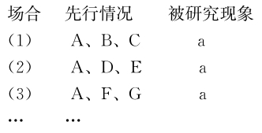
所以， A是a的原因（或结果）
契合法的结论是“所以， A是a的原因、结果，或者原因的一部分”。但是A到底是原因还是结果，你还得进一步研究。
契合法的特点是“从异中求同”。它主要是一种观察的方法，通过排除现象间不同的因素，寻找共同的因素，来确定现象间的因果联系。这种方法虽然比简单枚举归纳法前进了一大步，但是，归纳强度还是比较低，所得的结论的可靠性还不高，也就是说契合法的结论是或然的。
应用契合法所得到的认识（即找出的原因）并不都是正确的。因为在各种不同场合里存在的共同条件可能不止一个，而作为真正原因的某一共同条件可能正好被忽视了。比如，当我们通过契合法初步找到植物合理间作是增产的原因时，再进一步探寻，为什么间作能增产。经过进一步研究分析，才可以找到“间作能增产”的真正原因。因此，通过契合法所得到的认识，应当通过实践或用其他方法去进一步检验。
但是，契合法为我们提供了找到现象原因的线索。所以，它作为一种发现现象因果联系的方法，在科学研究和日常生活中经常被人们应用着。
【案例】
梦产生的原因
梦是怎样引起的呢？古人说：“日有所思，夜有所梦。”这是对梦产生原因的一种解释。现代人则解释得更为详细。外部的刺激能引起梦。睡时阳光照脸，就可能梦见熊熊大火;双足露在被子外，也许会做在冰雪中奔跑的梦。有人这样试验：在睡着的人的鼻前放了一瓶香水，那人醒后说，他梦中到了大花园，觉得到处都是花香。一本古老的著作也提到：轻轻加热熟睡者的手，他在梦中觉着自己穿过火丛。身体内部的刺激也会产生梦。正在发育的人，可能会梦到自己凌空飞行。有的气喘病人说，当他呼吸通畅后，也会做飞行的梦。如果睡着后，膀胱胀满要小便，就可能在梦中到处找厕所，小朋友或许就会尿床……
每个人的梦境可以千差万别，每个人所接受到的内外刺激也可以形形色色，但是有一个共同点，就是都受到了刺激，因此可以推断，“刺激是产生梦的原因”。这就是一个契合法推理。
（二）契合法评估
从以上论述可以看出，契合法就是通过消除不相干因素，找出一个共同特征，由此断定该特征与所研究事件有因果联系。
评估运用契合法推出的因果主张，可提出如下批判性问题：
CQ1：考察的场合是否足够多？是否有反例存在？
使用契合法时，前提并没有对出现被研究现象的所有场合都加以考察，而只考察了部分场合。因此，要想把契合法运用得好，应注意：尽可能多地考察有被研究现象出现的不同场合。考察的场合越多，越能排除偶然性。因为这样，各场合共有一个不相干的共同现象的可能性就越小，从而结论的可靠性程度相应地就得到了提高。
CQ2：不同场合中所具有的相同因素是不是唯一的？在所比较的两种现象之间是否存在其他相同的因素？
契合法的局限在于仅仅依靠该方法往往不足以确定待寻找的原因。当研究发现所有事例中共同的因素不止一个时，只使用该技术不能评判这些不同的可能性。
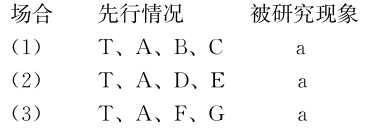
这时，除A外， T也可能是导致a出现的相同因素，因此，推断出A与a之间的因果关系受到严重质疑。
不同场合中的先行情况是众多的和复杂的，往往无法加以考察，这样就可能会把与被研究现象不相干的表面相同的先行情况看作是它的原因，而把表面看来不相同实质上却隐含着共同因素的先行情况当作无关情况而加以排除，因而获得的结论就不可靠。因此，要注意考察各种场合中是否有其他共同情况。
应用契合法要注意：考察各种场合中是否存在其他隐含的相同因素。有时人们忽略了不同场合中的另一个相同情况，而它可能恰好就是被研究现象的真正原因。
分析：使用契合法，不能仅凭表面相同的情况匆忙地下结论，否则就可能产生谬误，而应该找出实质性的相同点。
分析：上述研究人员得出这个结论的方法就是契合法，即其他条件都不同，只有光照相同。若事实上，每天六小时的非工作状态，改变了患者原来的生活环境，改善了他们的心态，这是对抑郁症患者的一种主要影响。这对以上的实验进行了另一种解释，从而表明，光线照射的增加，和冬季忧郁症缓解这两者之间的联系只是一种表面的非实质性的联系。这就有力地削弱了以上的结论。
【案例】
疟疾的防治
起初，人们只知道疟疾是由疟原虫引起的，它一旦钻入人体，便会致病。但是，人们并不知道疟原虫是怎样钻进人体的。因此必须寻找出传播疟原虫的媒介物，防治疟疾才有可能。
1895年7月，英国医生罗斯为寻找传播疟原虫的媒介物，从英国来到了疟疾猖獗的印度。他调查了几个疟疾流行最严重的地区，这些地区的自然条件和社会条件并不相同，但为什么疟疾同样流行呢？他发现这些地区有一个共同的特点：蚊子特别多，他想：难道传播疟原虫的是它？后来罗斯经过反复实验，证实了自己的推论。他因此而获得了诺贝尔奖。
罗斯所应用的就是契合法，罗斯在印度调查了疟疾猖獗的几个地区，发现这些地区的自然条件和社会条件很不相同，只有一个唯一共同的先行情况：蚊子特别多（A）。于是得出结论：疟原虫通过蚊子钻入人体（A）是发生疟疾（a）的原因。
而在罗斯之前，欧洲人一直认为引起疟疾的原因是沼泽地，因为凡是流行疟疾的地方都有沼泽地。后来，罗斯才发现产生疟疾的原因不是沼泽地，真正的原因是疟原虫通过蚊子叮咬钻入人体。沼泽地只是容易生蚊子，因此容易流行疟疾。把沼泽地当作了引起疟疾的原因，这是将原先的相同情况找错了。由此可见，在寻找原因的时候，不能被表面现象所迷惑，而应仔细加以分析。
CQ3：表面相同是否有实质不同？表面不同是否实质相同？
在运用契合法时，要注意被研究现象有时表面相同但实质上有差异。而在先行因素中有时表面看起来是不同的，但实际上隐含着相同的因素，这时，推断出A与a之间的因果关系受到严重质疑。
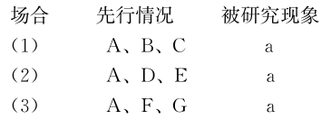
比如B、D、F表面不同，实质相同。
分析：这一推理显然是错误的。虽然相同点是苏打，但却不是喝醉的真正原因。苏格兰酒、波旁酒、白兰地、朗姆酒、杜松子酒等等虽然是不同的酒，但实质相同，都是酒，喝醉是其中的酒精引起的。
分析：这个结论显然是不对的，原来另一个真正的原因他没有注意到，咖啡、浓茶、香烟虽是三个不同的东西，但它们却有一个共同的因素，即有大量的兴奋剂，而这才是引起失眠的真正原因。假如再考察第四天和第五天，虽然同样每晚看书，但只喝了几杯白开水，结果失眠现象消失了，这样也就不容易把每晚看书误认为是失眠的原因。
CQ4：相同点是导致某一现象产生的部分原因，还是全部的或唯一的原因？
在运用契合法时，有时所发现的共同因素虽然是结果的原因，但只是部分原因或次要的原因，此时，还需要分析出导致结果产生的其他原因或主要原因。
分析：研究人员运用契合法得出了结论。这一推论是有缺陷的，因为虽然老鼠都失去了一种感觉，但不是同时失去所有动觉以外的感觉，因此，有可能是动觉和其他感觉相结合进行迷宫学习。
差异法，也叫求异法，是指这样一种方法：如果某一现象在一种场合下出现，而在另一场合下不出现，但在这两种场合里，其他条件都相同，只有一个条件不同（在某现象出现的场合里有这个条件，而在某现象不出现的那一场合里则没有这个条件），那么，这唯一不同的条件，就是某现象产生的原因。
（一）差异法概述
差异法不关注在产生结果的事例中什么是共同的，而是关注在产生结果的事例和没有产生结果的事例之间存在什么差异。当我们去除某个因素时，待考察的现象也不再发生，当我们将该因素引进来时，待考察的现象发生了，此时，我们将相当肯定地找到我们考察的现象的原因或原因的一个不可缺少的部分。
差异法可用下述公式来表示：
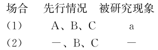
所以， A是a的原因（或结果）
差异法的特点是同中求异（只有一个因素不同，其余相同）。
差异法大多是以实验观察为依据的。由于它能够经过人们自觉的安排，既考虑到被研究对象出现的场合，又注意到被研究对象不出现的场合，因此，它的结论比契合法的结论更为可靠。正是因为差异法所得结论的可靠程度高，因此，人们经常使用这种逻辑方法来探寻现象间的因果联系。比较某现象出现的场合和不出现的场合，如果这两个场合除一点不同外，其他情况都相同，那么这个不同点就是这个现象的原因。
比如，当我们研究胃不适问题时，如果我们已经知道得病的所有人吃了甜点罐装梨子，而没有吃那些梨子的人没有得病，我们能相当自信地认为，我们已经找到了该病的原因。
【案例】
巴斯德实验
在1881年5月5日，法国生物学家巴斯德就对一个牧场的50只羊做过炭疽病毒的免疫实验。巴斯德对牧场围观看热闹的人说：“诸位先生，我现在把这50只羊分成两群，我将给其中的一群羊注射炭疽病的疫苗，而不给另一群羊注射，过12天，我还要这样重复一遍。再过12天，我将给这50只羊全部注射新鲜的、剧毒的炭疽病菌，请大家记住，注射炭疽菌两天后，先前没有接种疫苗的25只羊将全部死掉，而接种过疫苗的25只羊一只也不会死。”看着他说话，人们窃窃私语。然而，到了6月1日，人们再来到牧场时，展现在他们面前的情景和巴斯德预言的完全一样。
巴斯德的实验运用的就是差异法。两群羊中的一群接种过炭疽病疫苗，而另一群没有。两群羊在这唯一不同的情况下，都注射了炭疽病菌，两天后，前者安然无恙，而后者全部死去。由此可知，接种炭疽病疫苗是羊群免疫的原因。
差异法的目的是确定预先选择好的条件是否是现象的原因，这个预先选择好的条件在两个场合中的一个出现，在另一个不出现。而并用法的目的是把被选出的一系列条件汇总，确定哪一个条件是现象的原因。通过运用充分条件和必要条件的相关规则，把一系列条件减少到仅有一个。
差异法在几乎所有类型的科学研究中起着中心作用，为了检查某种因果关系是否为真，最可靠的实验方法是改变原因后，看结果是否不同。差异法的推理在科学研究中，特别是科学实验中，就是对照实验方法，是一种被广泛运用的方法。
对照实验包含两组对象：一个实验组，一个对照组。实验组由接受一定处理的对象组成，而对照组则由没接受处理的对象组成，除此之外，与实验组的成员具有相同的条件。然后，在实验组中加入某种情况（即某种条件、某种原因），进一步观察被研究对象是否出现。在对照组中，则不加入某种情况。再将两个场合的情况进行比较，推出可靠性程度较大的结论。
科学史上许多重要发现和科学原理都是在科学实验中应用差异法取得的。例如“空气能传声”“氧气能助燃”等原理都是运用差异法得到的。
【案例】
基因剔除
医疗研究人员对特定蛋白质的效果进行研究，这种蛋白质被怀疑与某种疾病的发展有关联。待考察的物质是否真的是原因（或者原因的一个不可缺少的一个部分），只有在我们建立了一个该物质被排除的实验环境的时候才能确定。当然，研究人员只能是在老鼠身上而不是在人身上进行该研究。从染上同样疾病的老鼠的身上去除产生可疑蛋白质的基因。处理过的老鼠进行近亲交配，以产生后代。这些后代被称为“基因剔除老鼠”。该老鼠与其他患有该种疾病的老鼠除了由基因剔除产生的差别外其余的完全一样，老鼠身上由基因剔除而缺少的物质被假定为原因。这样的研究在医疗上产生了重大进展。
【案例】
蝎子实验
美国纽约州立大学的两位女生物学家发现，有一种蝎子头顶上有第三只眼，具有辨别方向的功能。巴巴拉艾利斯昆恩和卡洛西蒙在亚历桑纳州山区研究一种蝎子，发现蝎子头顶上有第三只眼，可以辨别方向，于是就做了一项实验。她们共抓了80只蝎子，其中40只在头上涂上油漆，其余40只未涂，再将这80只蝎子全部带到和它们住处相隔150米远的地方，结果发现，未涂油漆的蝎子，不到半个钟头的时间就可以找到原来的住处，但是头上涂过油漆的蝎子，就如同没头苍蝇般地乱闯，始终找不到归途。这项实验证明了蝎子头上的第三只眼是蝎子有方位感的主要原因。
【案例】
新药测试
为了测试某种针对儿童注意力缺陷多动障碍（多动症）的新药的有效性，可以进行一次实验。选取50个患有多动症的儿童，随意选取其中25个安排在实验组，另外25个安排在对照组。给实验组的儿童服用这种药物，在同一个教室的情况下，给对照组的儿童服用无效对照剂（糖丸），这可以以“双盲”为基础进行，以便孩子和进行实验的人员都不会预先知道谁会得到药物，目的是尽可能多地控制条件。然后记录下50个儿童中的每一个人在一段时间内，如一个小时内的消极行为。比如应该记下以下行为：每次孩子离开其座位、打扰别人、烦躁、不听从指令等。
这样的实验结果预计会遵循正态分布曲线（钟形曲线）。其中一条曲线代表实验组，另一条代表对照组。假定药物有效，两条曲线可能互相远离，但也可能部分重叠。这就意味着实验组的某些儿童比对照组的某些儿童表现出了更多的消极行为，但大多数实验组的儿童比大多数对照组的儿童表现出较少的消极行为。然后对两条曲线运用统计学方法去确定药物的有效性。
（二）差异法评估
应用差异法要注意：前提中比较两个不同场合所出现的不同情况，必须是唯一的，而且确实不同。如果所比较的两个不同场合中出现的不同情况不是唯一的，或者所比较的两个不同场合中出现的“不同情况”实际上是相同的，那么差异法就失去了根据，其结论就是不可靠的。
评估运用差异法推出的因果主张，可提出如下批判性问题：
CQ1：先行情况和被研究现象之间是否具有实质性的因果联系？
即要从导致不同结果的原因方面来考察并确认差异因素是唯一、关键的或必不可少的。
分析：以上是运用差异法做出的论证，比较的对象是早期人类与现代人，先行情况中的差异因素是“饮食”，比较的现象是“牙齿健康”，差异法的结论：差异因素（饮食情况）是导致某种现象（牙齿健康）产生的原因。要使这个论证成立，就必须确认“饮食情况”这个差异因素对“牙齿健康”这个现象的出现是关键的，即饮食是影响牙齿健康最重要的一个因素。
分析：上述实验表明，实验鼠跑前或跑中喝西红柿汁，可减轻疲劳，而跑后喝就没有效果。
CQ2：有没有考察别的场合？是否有反例存在？
分析：如何增强上述论证的可信度呢？若发现，没戴眼罩的鸟和左眼戴眼罩的鸟顺利从笼中飞了出去，右眼戴眼罩的鸟朝哪个方向飞的都有，那么，这作为一个证据，就能有力地支持研究人员的发现。
分析：如何增强上述论证的可信度呢？若发现，在父母的社会化训练环境中长大的黑猩猩在交配冲突中的侵略性，比没有在这一环境中长大的黑猩猩弱得多，这作为一个证据，就有力地加强了上述论证。
分析：上述发现是使用差异法做出的论证，比较的对象是老年鼠和年轻鼠，比较的现象是“记忆力”，得出的结论是：差异因素（SK3含量）是导致某种现象（记忆力好坏）的原因。若事实上，当科学家设法降低老年实验鼠脑部SK3蛋白质的含量后，它们的记忆力出现了好转。这作为一个证据，有力地加强了科学家的观点。
CQ3：不同场合中所具有的差异因素是不是唯一的？在所比较的两种现象之间是否存在其他差异的因素？
因为差异法是“从同中求异”，正反两种场合除了有一种情况不同外，其余情况必须完全相同，如果相异之处不止一个，就很难判定真正的原因了。注意，在相同因素中有无差异因素。没有它因是支持，另在它因是削弱。
分析：上述论证是有缺陷的。可能真正的原因是第一天喝的是浓茶，第二天喝的是淡茶。
分析：上述科学家运用差异法得出结论，不具有紫外视觉的这种家蝇必定在这个基因上有缺损。要想使结论成立，必须保证没有别的因素的影响，比如，这种家蝇在生成紫外视觉细胞时不需要其他的基因。否则，如果是其他基因的变化导致不具有紫外视觉，则以上论证就不成立。
分析：上述运用差异法得出的结论要成立，必须假设，除了保护脑部不受有毒化学物质的侵害， P450对脑部无其他作用。否则，如果除了保护脑部不受有毒化学物质的侵害之外， P450对大脑“还有”其他作用，比如P450能抵抗某种病菌，而该种病菌能导致帕金森氏综合症，那么，就不是有毒化学物质可能导致帕金森氏综合症了。
分析：上述论证是有缺陷的。这是使用差异法做出的论证，先行情况中的差异因素是“镁盐”，比较的现象是“黄瓜产量”，得出的结论是：差异因素（镁盐）是导致某种现象（黄瓜产量大）产生的原因。要削弱这个论证，就必须指出除了“镁盐”这个差异因素外，另有其他差异因素。若发现，这两个实验大棚的土质与日照量不同，从而从“另有他因”的角度解释了第一个实验大棚较高产量的原因，削弱了上述论证。
分析：上述论证是有缺陷的。上述对照实验的结果要可靠，必须保证这两组患者没有别的方面的差异，若事实情况是：第一组成员普遍比第二组成员患CFS病的时间长、病情重，那么第一组比第二组的治愈率低就很可能是其患CFS病的时间长、病情重的原因所致，而未必是受复原机会的信念的影响所致。从而有力地削弱了上述论证。
分析：上述论证是有缺陷的。上述论证根据服用钙片的一组老人比服用安慰剂的另一组老人突发心血管疾病的案例多，得出结论，服用钙片更容易诱发心血管疾病。这一结论的得出必须基于这两组老人具有可比性。如果这两组老人除了是否服用钙片外其他情况不一样，比如，选择服用钙片的老人大都身体较弱，并且患有程度不同的心血管疾病，这就有力地削弱了结论。
分析：上述论证是有缺陷的。上述论证可简化为，各个医院的每个病人所能得到的医疗资源基本上都是相同的，所以服务质量上的差别可能是造成死亡率不同的原因。若事实上，在不同的医院之间，病人病情的严重程度平均来说会有很大的差别。这意味着，也许死亡率高的服务质量并不低，甚至有可能更好，只是危重病人较多，导致的死亡率高，有力地质疑了上文的结论。
CQ4：背景是否一样？其他条件是否都相同？
分析：这是使用差异法做出的论证，先行情况中的差异因素是“吃糖”，比较的现象是“认知能力”，差异法的结论：差异因素（吃糖）是导致某种现象（认知能力低）产生的原因。要使这个论证成立，就必须指出除了“吃糖”这个差异因素外，其他先行情况都是相同的。若事实上，两组被试验者的认知能力在试验前相当，这就表明了背景因素是相同的，有力地支持了上述结论。
分析：上述论证是有缺陷的。上述结论是，异地通婚可提高下一代的智商。该论证是有缺陷的，若事实上，能够异地通婚者是智商比较高的，他们自身的高智商促成了异地通婚。这显然有利于说明，异地通婚的夫妻下一代智商高的原因是异地通婚者本身就智商高，而并非是异地通婚本身能提高智商，这就有力地削弱了以上的结论。
分析：上述结论是通过对比实验得到的，要使这一结论具有说服力，必须保证对比实验的背景条件是一样的，若事实上，两组中都有自身患癌症和因注射癌细胞而患癌症的实验鼠，且两组均有充足的食物和水，这就表明了两组实验对象之间的相同之处，是对上述论证有力的支持。
分析：上述实验运用的是差异法，其特点是同中求异，也就是其他先行条件相同，只有一点不同，即实验组食用大量含谷氨酸的味精，对照组不食用。该论证必须假设，两组实验对象是在实验前按其认知能力均等划分的。即认知能力这个先行条件是相同的，否则，如果两组实验对象在实验前其认知能力不同，比如实验组的认知能力本来就比对照组差，那么，这个实验就不能说明谷氨酸会降低人的认知能力。
分析：很少服用抗生素的人比经常服用抗生素的人有更强的免疫力，按差异法推理，正常情况应该是，服用抗生素会削弱免疫力。然而，上述的结论是，没有证据表明这一结论，为什么呢？肯定是存在别的原因使差异法得出的这一结论不可靠。若发现，免疫力强的人很少感染上人们通常需要用抗生素进行治疗的疾病，则说明，免疫力强的人，即使治病，也很少服用抗生素。这意味着，很少服用抗生素的人本来就免疫力强，也就是说，不是因为服用抗生素削弱了免疫力，而是免疫力强的人不需要服用抗生素。
分析：这是用差异法得出的结论，其隐含的假设是，除了添加剂含量降低之外，要保证其他条件不变。而该论证的问题在于，当用发展的眼光来看待儿童的行为问题时，若不改变饮食，那些儿童的行为问题是否也会自动下降。
CQ5：两个不同场合中所具有的差异因素是部分原因，还是全部原因？
分析：若事实上，与其他情况相比，身体生长时期需要相对多的碳水化合物。这表明，除了运动因素以外还有身体生长因素影响碳水化合物的需用量，这就从另一个角度解释了上面的事实，严重地削弱了以上论证。
CQ6：是否还有隐藏着的其他原因？表面相同是否有实质不同？表面不同是否实质相同？
如果在先行情况中发现有若干相异情况，则可初步确定这些相异情况与被研究现象有因果联系，但需要对每一个相异情况进行分析，寻找真正的原因。
应用差异法要注意：前提中比较两个不同场合所出现的不同情况，必须是确实不同的。如果所比较的两个不同场合中出现的“不同情况”实际上是相同的，那么差异法就失去了根据，其结论就是不可靠的。
分析：该同学的推理是有缺陷的。后来，经医生检查，发现他看书时戴眼镜，不看书时不戴眼镜，引起他头痛的真正原因是他那副近视度数不合适的眼镜。
分析：这是使用差异法做出的论证，先行情况中的差异因素是“服用不同药物”，比较的现象是“寿命”，由于两年后每一组都有20位病人去世，从中得出结论：新药X并没有更好的疗效。若事实上，在死亡的20人中，第一组的平均死亡月份比第二组早三个月，则就有利于说明差异因素（服用新药）是导致某种现象（寿命增加）产生的原因，这样，就说明服用新药更有效，这就有力地削弱上述论证。
分析：这是使用差异法做出的论证，先行情况中的差异因素是“是否参加集体鼓励活动”，比较的现象是“寿命”，由于10年后每一组都有41位病人去世，从中得出结论：集体鼓励活动并不能使患有T型疾病的患者活得更长。若发现，每周参加一次集体鼓励活动的那组成员平均要比另外一组多活两年的时间，则就有利于说明差异因素（参加集体鼓励活动）是导致某种现象（寿命增加）产生的原因，这样，就有力地削弱上述论证。
分析：上文根据用杀菌剂的草莓地歉收，不用杀菌剂的草莓地也歉收，得出结论，杀菌剂不是这次歉收的原因。这一论证是有缺陷的，若发现，喷洒过杀菌剂后，这些杀菌剂顺着灌溉通道，很容易地从一块地流入另一块地。这意味着不用杀菌剂的草莓地歉收实际上很可能还是杀菌剂造成的，真正没有杀菌剂的草莓地很可能是不歉收，这就有力地削弱了上述结论。
分析：以上论述，通过对3岁孩子的研究，发现独生孩子与非独生孩子的能力一致，由此得出结论，独生孩子与非独生孩子的社会能力发展几乎一致。这一论证是有缺陷的，如果事实上，家长通常在第一胎孩子接近3岁时怀有他们的第二胎孩子，这意味着，实际上参与调查的头胎非独生孩子在3岁以前没有弟弟或妹妹，也即无法区分独生孩子和非独生孩子，影响行为能力的生活环境，对于他们来说是一样的。所以调查的结果，不能反映独生孩子与非独生孩子之间的差异（也许再过几年研究，就有明显差异了）。
契差法也叫契合差异并用法、求同求异法，是指这样一种方法，考察两组事例，一组是由被研究现象出现的若干场合组成的，称为正事例组;一组是由被研究现象不出现的若干场合组成的，称为负事例组。如果正事例组某被研究的现象的出现只有一个因素是共同的，而负事例组该因素不出现时这个现象也不出现，那么，这个共同的因素就是被考察现象的原因。
（一）契差法概述
契差法需要两次求同，一次求异。人们第一次应用契合法确定了被研究对象出现的正面组各个场合的共有情况A，但还没有把握断定被研究现象不出现的反面组各个场合也只是由于这个情况A不存在。因此，还要第二次应用契合法，考察被研究现象不出现的反面组各个场合，再得出一个结论。然后，用差异法对比正反两组各个组合的情况，最后才做出结论。
契差法的运用包括三个步骤：
第一，比较正事例组的各个场合，运用契合法推知，凡有A情况存在就有现象a出现;
第二，比较负事例组的各个场合，运用契合法得知，凡无A情况存在就无现象a出现;
第三，把前两步比较所得的结果加以比较，根据有A就有a，无A就无a，运用差异法就可得知： A与a之间有因果联系。
可用公式表示如下：
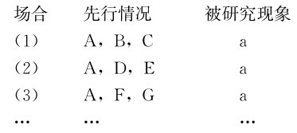
以上为正事例组。
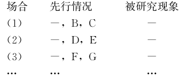
以上为负事例组。
所以， A情况是a现象的原因。
【案例】
脚气病的发现与治疗
我国唐代名医孙思邈是世界上记录脚气病并找出它的病因与治疗方法的第一人。孙思邈发现有钱人常得脚气病，而穷人却不易得脚气病，这是为什么呢？他想，这很可能同饮食有关系。不是多吃了些什么，就是缺少些什么。富人吃的是荤腥细粮，而穷人吃的是素食粗粮。脚气病或许就是不吃粗粮引起的。于是，他把细粮与粗粮进行比较，发现精米、白面虽然好吃，但是缺少了米糠、麸皮。据此，他试用米糠、麸皮来治脚气病，结果很灵验。后来，他又发现可仁、吴茱萸等中药也有疗效。
孙思邈应用契差并用法的过程有以几个步骤：
第一步，先用契合法，从正面组各个场合的先行情况中找出共同的那个情况，即富人生活习惯千差万别，但有一个共同点，那就是不吃粗粮。确定不吃粗粮是患脚气病的原因。
第二步，再用契合法，从反面组各个场合的先行情况中也找出一个共同情况，即穷人的情况也不尽相同，但也有一个共同点，吃粗粮。确定吃粗粮是不得脚气病的原因。
第三步，对比正反两组各个场合，一组不吃粗粮，另一组吃粗粮，应用差异法确定患脚气病的原因是不吃粗粮。
脚气病因的发现，外国比中国晚了一千多年。1882年，从东京到新西兰的日本军舰“龙晓号”，在200多天的航行中，许多人患了脚气病， 20多人死亡。过了两年，军舰“筑波号”走的是同一条航线，航行的时间虽然多了十几天，但只有14名脚气病患者，无一人死亡。比较两次航行，别的情况大致相同，明显的不同是伙食改成近似西餐。由于利用了这一经验，脚气病对日本海军的威胁大大减轻。但是脚气病病因仍然是个谜。
有位在荷属东印度（今天的印度尼西亚）殖民军中服役的荷兰军医名叫克里斯琴·爱克曼，在1890年之后，有一天他发现医院养鸡场的鸡突然得了病。这些鸡的脚无力，不能行走，同人得脚气病的症状一样。他非常感兴趣，密切地注视鸡的变化，过一段时间，鸡的病又好了。原来他发现：起初，饲养员用精米喂鸡，鸡得病，后来，新来的饲养员认为，用给病人吃的精米喂鸡太可惜，于是改精米为糙米，这样一来，鸡的脚气病又好了。爱克曼亲自又做了试验，出现了同样的现象。人得脚气病的原因是不是也这样呢？他对荷属东印度的100多个监狱作了统计，发现在吃糙米的犯人中，每1万名中，脚气病患者仅1人，而在吃精米的囚犯中，则有3 900人之多。由此，他完全弄清了糙米同脚气病的关系。
但是，为了找出糙米中的这种未知物，科学家仍然花费了很多时间。1910年和1911年，铃木梅太郎和卡西米尔·芬克分别发现了这种物质。芬克把它命名为维生素。后来，科学家们又发现了多种维生素。（根据百度百科整理）
契差法的特点是“既识同又辨异”，它是两次应用契合法，一次应用差异法，然后做出结论。
契差并用法的名字使人联想到它来源于契合法和差异法的简单结合，可实际情况并非如此。契差法不是契合法和差异法的相继应用，契差法要经过三个步骤：
第一步，用契合法确定被研究现象a出现的正面场合组内各个场合都有A这一先行情况出现，即有A就有a。
第二步，再用契合法确定被研究现象a不出现的反面场合组内各个场合都没有A这一先行情况出现，即没有A就没有a。
第三步，把上述两步所得的结论加以比较，用差异法得出结论： A是a的原因。
契差法是通过三个步骤来判定现象之间的因果联系的：首先运用契合法确定被研究现象出现的诸场合中的唯一共同情况（A）;其次运用契合法确定被研究现象不出现的诸场合中的唯一共同情况（无A）;最后运用差异法将上述两个事例组的各自的共同情况加以比较而得出结论：情况A可能是被研究现象a的原因。
应该注意到，这种方法第二次运用契合法时跟一般的契合法不相同，它在反面组中求同，是要在不具有“a”的现象的各场合中，求出唯一共同点“A”，从而确定“无A则无a”。这种方法最后运用差异法时与一般差异法不同。一般差异法是在两个场合中对比，它要求只有一种情况相异，其他情况都要相同;而契差并用法则是在两组场合中进行对比，它只注意一组场合“有A”、一组场合“无A”这一相异情况，并不要求两场合的其他情况都相同。
契差并用法能适用于比较复杂的情况。因为严格运用差异法必须满足“在两种场合里，只有一个情况不同，而其余情况都相同”的要求。但是，人们的观察和实验因客观条件的限制往往不能做到这一点。这时，人们就不能运用差异法，而只能运用契差并用法来探求某一现象的原因。
【案例】
鬼倒路
所谓“鬼倒路”，是指走夜路的人，经过一夜的奔波，突然发现转回到原地，信鬼神的人说，这是鬼使神差。可是，下面的现象用“鬼倒路”解释得通吗？在一望无垠的大沙漠之中，征途漫漫，旅行者日夜跋涉，成群结队，一旦迷失方向，尽管不断地走，发现还是回到了原地。如此反复数次，终因跳不出这迂回的圈子而葬身于茫茫沙漠之中。
为了解释兜圈子的现象，科学家根据一定的设想，安排了如下试验：在一个广场，远处有一座大厦，叫来许多的应试者，蒙上他们的双眼，分别向正对着大厦的门的方向走去，看谁能走进大厦。这应当说不是一件难事。应试者都竭力使自己走得更直些。事与愿违。临近大门时，这些人不是偏向左边，就是偏向右边。粗略地观察他们的行进轨迹，可以发现，在他们走过一段距离之后，他们的行走轨迹就呈现出两条弧线，或是弯向左，或是弯向右。调查一下，凡向左偏的人，都习惯用右手;凡向右偏的人，则是清一色的左撇子。统计结果表明，凡是习惯用右手的人，右手比左手要更发达有力，受此影响，右脚比左脚更发达有力，右脚的跨步比起左脚来略微要大些。左撇子的情形正好相反，左脚的跨步要比右脚略大些。总之，人的双脚跨步不可能绝对相同。左右两脚各跨一步的差距是微不足道的，但是随着时间的推移，两脚所走过的路程之间的差距会愈来愈大。在月黑风高之夜，在沙漠迷路之时，在双目紧闭等种种特定场合，人们左、右两脚行走的轨迹不可能是平行的直线。在短距离内它会是两道弧线。随着弧线的延伸，就出现了两个大小相差无几的同心圆。“鬼倒路”之谜正在于此。
把兜圈子的原因解释为两脚跨步不同，这种解释最初是一种设想，也即假设。这种假设是根据已有的经验演绎出来的。人的两脚跨步肯定不会绝对相同。问题是两脚跨步的不同有没有规律可循。
“凡是向左偏的人其右脚跨步大”这是个经验命题，造成右脚跨步大的原因是什么呢？比较往左偏的人，他们有许许多多不同特点，如不同的身材、习惯、性格、心理状态、情绪等等，但有一个显著的共同特点，就是都习惯用右手。由此可知，习惯用右手是右脚跨步大的原因。这是运用契合法推理得到的。依照以上方法，可以推得“习惯用左手是左脚跨步大的原因”。再将这两组事例加以对比，发现在第一组例子中（正面场合）人人都有用右手的特点，而在第二组例子中（反面场合），也有一个共同特点，这个共同特点恰好不是第一组的那个共同特点。以上两次求同加一次对比，构成一个完整的契差并用法推理。在我们具体分析的这第二组事例中，虽然没有“习惯用右手”这个特点，但有一个“习惯用左手”的共同特点。因此，根据契差并用法推理就可推得“习惯用右手是右脚跨步大的原因”，也可推得“习惯用左手是左脚跨步大的原因”。
【案例】
胰岛素谋杀案
1957年英国发生了历史上第一例胰岛素谋杀案。30岁的妇女巴洛被其丈夫注射胰岛素而死亡，但其丈夫拒绝认罪。
法医们进行尸体检验后发现死者心脏和其他各个器官都是健康的，死者也没有糖尿病，但死者左、右臀部各有两个点状小针孔痕迹。根据死者死亡前的症状，法医们怀疑被害人可能是因注射了一定量的胰岛素引起低血糖休克而死亡的。
为了查明案情，法医们反复做了如下动物试验。首先，将死者臀部针孔部位的皮肤、脂肪和肌肉连同针孔一起切下，把该部分组织制成提取物，分别给一组试验用的动物注射，注射后动物即表现出颤抖、抽搐、躁动，直至虚脱引起低血糖休克而死亡;然后又将同样的尸体提取物用化学制剂半胱氨酸和胃蛋白酶（可破坏胰岛素并使其失去作用）处理后，注射到另一组小鼠、海豚和大鼠体内，结果发现这些动物都没有注射胰岛素引起的各种症状。据此，法医们认为：巴洛是由于注射了一定量的胰岛素引起低血糖休克而死亡的。
在本案中，法医们运用了契差并用法。在有注射胰岛素引起的症状，即表现出颤抖、抽搐、躁动，直至虚脱引起低血糖休克而死亡的场合中，都有一种情况出现，即注射了死者组织的提取物;而在没有注射胰岛素引起的症状的场合中，都注射了经破坏胰岛素使其失去作用处理后的死者组织提取物。据此，法医们认为：注射一定量的胰岛素是引起低血糖休克而死亡的原因。
在关于人的某些科学研究中，在任何显著程度上控制环境几乎都是不可能的。这样的研究包括时间跨度长的调查，有争议的健康主题调查，以及对现行的法律道德有限制方面的调查。
【案例】
根瘤与土壤含氮量
人们早就发现种植豆类作物不用施氮肥。经考察得知，豆类作物，如豌豆、蚕豆、大豆的根茎都有根瘤，并且其土壤中的氮含量增加;而其他作物，如小麦、玉米、水稻等没有根瘤，其土壤中的氮含量就没有增加，需要人工施氮肥。因此，根部有根瘤是土壤中氮含量增加的原因。
在上述例子中，被研究的现象是种某些植物不但不需要给土壤施氮肥，而且还能使土壤的含氮量增加。为寻找这种现象出现的原因，我们把被研究现象出现的场合（能使土壤增加含氮量的植物）编为一组，称作正事例组;把被研究现象不出现的场合（不能使土壤增加含氮量的植物）编为一组，称作负事例组。在正事例组的各个场合中只有一个共同的情况，即大豆、豌豆、蚕豆等豆类植物都长有根瘤，其他情况都不同，人们可以运用契合法推出豆类植物的根瘤是使土壤含氮量增加的原因这样一个结论。在负事例组的各个场合中，也只有一个共同的情况，即小麦、玉米、水稻等植物都没有根瘤，其他情况也都不同，此时人们又可以运用契合法推出非豆类植物没有根瘤是不能使土壤增加含氮量的原因的结论。在这个基础上，比较正负事例组，发现有无根瘤是二者的差异之处。于是可以推出结论：豆类植物的根瘤是使土壤含氮量增加的原因。
【案例】
甲肝疫苗的测试
一个著名医学成就显示了这种契差法的威力。甲型肝炎是肝脏感染，它折磨着成千上万的美国人。它在儿童中广泛传播，主要通过受污染的食物和水进行传播。它有时是致命的。如何预防它呢？当然，理想的方法是注射有效疫苗。
一种被认为有效的疫苗，在纽约俄兰基县克亚斯·乔尔镇的哈西德教派的犹太人社区中进行测试。该社区不同寻常，每年都流行甲肝。在克亚斯·乔尔镇几乎无人能够逃过甲肝的感染，该社区中近70%的人在19岁前就感染上了。克亚斯·乔尔镇医学研究所的阿兰·威尔兹伯格和他的同事，在该社区中招募了年龄2至16岁的1 037名儿童，这些儿童没有受到甲肝感染，他们血液中没有该病毒的抗体。一半儿童（519人）注射了一种新的疫苗，这些注射了疫苗的儿童中没有发现一例甲肝。没有注射疫苗的518个儿童中25个儿童不久被甲肝病毒感染。于是人们找到了甲肝疫苗。
波士顿、华盛顿的肝脏专家对该项研究表示祝贺，称赞该研究是“一个重大突破”“医学上重要的进展”。该研究依赖于什么推论方式？契合法和差异法都用到了。在医学研究中人们普遍这样做。在该社区能够对甲肝病毒免疫的年轻人中，只有一个条件是共同的：所有免疫者都接受了新的疫苗。由此，我们肯定地认为，该疫苗确实是导致免疫的原因。差异法对结论提供了很大的支持：免疫者的状态和不免疫者的状态在每个方面均类似，只在一个方面不同，即免疫者被注射了疫苗。
（二）契差法评估
评估运用契差法推出的因果主张，可提出如下批判性问题：
CQ1：正、反两组所考察的场合是否足够多？
正事例组与负事例组的组成场合愈多，愈能排除偶然的巧合的情形，结论的可靠性愈高。因为运用契差并用法时，正、反两组都要用到契合法。因此，考察的场合愈多，就愈能排除偶然碰巧的情形，避免把一些不相干的情况与被研究现象联系起来。
CQ2：反面组的场合与正面组的场合的相似程度如何？
应选择与正事例场合较为相似的负事例场合来进行比较。因为契差并用法最后都要用差异法来比较正、反两组的结果，因此，正、反两组中相应的各场合越是相似，结论才会越可靠。
分析：儿童教育专家研究发现，一组孩子用“小兔读书”软件，创造力下降，另一组孩子不用“小兔读书”软件，创造力不下降。可表示为：
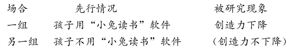
共变法是指，在其他条件不变的情况下，如果一个现象发生变化，另一个现象就随之发生变化，那么，前一现象就是后一现象的原因或部分原因。
（一）共变法概述
与契合法、差异法、契差并用法相比较，共变法有其优点。前三种方法都是从现象出现或不出现来判明因果联系的。共变法却可以从现象变化的数量上来判明因果关系，可以得出一个函数关系，也就使得结论的可靠性程度提高。
共变法可用下述公式来表示：
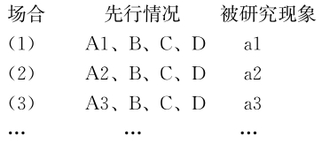
所以， A是a的原因
共变法在科学研究和日常生活实践中都有很大作用。它不仅可以用来确定因果联系，而且也可以用来作为反驳事物间具有因果联系的根据。只要我们能够证明假定原因的变化并不引起预想结果的变化，我们也就可以因此而否认它们之间可能存在的因果联系。
另外，共变法的作用还表现在：几乎所有测量仪器（比如温度计、体温表、气压表、行车里程表等）的构造，都是以互有因果联系的现象间的共变关系为基础的，从而也就可以使我们能根据一种现象的量来判断另一种现象的量。
【案例】
月事
我国古代早就发现了月的圆缺与人的某些生理现象存在着共变关系。《黄帝内经》把妇女的月经称为“月事”，不无道理。根据现代生理卫生知识，月经周期为28天，这与朔望月的周期29. 53059日很接近。最近德国的妇科专家调查了1万多个妇女的月经周期，结果表明，在月满时，妇女们月经出血量成倍增加，而在月亏时正好相反。
更有趣的是，据说人的情绪也以28天为一个节律。巴黎消防队在每个月满的夜晚，都进入超警戒状态。根据他们的经验，月满时，纵火犯的活动会增加。一位警察署的处长声称：“纵火犯、盗贼、漫不经心的驾驶员和酗酒者，好像在月满初期更趋于闹事，而满月渐渐缩小期间，上述情况又渐渐平静下来。”还有人指出：“当月满时，月亮向地球投射它的耀眼银光，夜里很多人睡不着。天亮后， 4个妇女中的1个、9个男人中的1个会抱怨说：我一夜都没合眼。即使那些睡着的，半夜里也往往因噩梦而醒。”
共变法的特点是“同中求变”。
契合法是异中求同，差异法是同中求异，契差法是两次求同一次求异。与契合法比较，差异法有较高的可靠性。共变法的共变现象达到极限，就是差异法，所以说差异法是共变法的极端场合。契合法、差异法都是从先行情况与被研究现象的出现与不出现来判明因果联系的。而共变法却是从先行情况与被研究现象的数量或程度的变化来判明因果联系的。在运用共变法时，先行情况与被研究现象在被考察的几个场合始终存在，只是两者在量上发生一定的变化，根据这种变化，不但能找出原因，还能初步确定原因与结果之间的数量关系，因而共变法的结论具有较大的可靠性。
把共变法与差异法做一比较，便可看出，差异法是共变法的局部（或极限）场合。我们只要把引起另一现象发生共变的那一现象，改变到完全消失或加大到一定界限，便会得到差异法推理所必需的场合。
共变法在科学研究中有着广泛的应用。在一些不能用契合法和差异法的场合，共变法是可行的方法。当有些先行情况或被研究现象不能消除或不易消除时就不能用差异法，也不能用契合法。例如温度、压力、引力、摩擦就是无法消除或很难消除的，而我们却可以运用共变法从量的变化上来研究与这些情况有关的现象间的因果联系。我们不能从太阳黑子的有无来研究它与磁暴间的因果关系，却可以从太阳黑子的变化来研究它与磁暴的因果关系。科学史上许多定律和学说都曾经是借助共变法才得以确立的。例如，关于气体压力、温度、容积之间关系的波耳定律和查理定律就是通过共变法得到的。
【案例】
头发与心肌梗塞
某报纸称国外有的科学家，通过对头发的化学成分的分析，发现头发内包含有大量的硫和钙。精确的测定表明，心肌梗塞患者头发中的含钙量已降到了最低限度。假定一个健康男子头发的含钙量平均为0. 26%，那么，一个患有心肌梗塞的男子，他的头发的含钙量仅仅只有0. 09%。据此，科学家们相信，根据头发含钙量的变化，可以诊断出心肌梗塞的发展情况。
分析：在其他情况保持不变的条件下，根据心肌梗塞病情发展越厉害，头发中的含钙量就相应地减少的事实，即头发的含钙量的减少状况与心肌梗塞病情的发展状况之间有定量的共变关系，得出结论：通过对头发中含钙量的分析，是可以预判心肌梗塞病情的发展状况的。
在社会科学研究中，有一种广泛应用的方法叫相关法，它是对穆勒的共变法的精确复制。
为了确定诸如暴力电视节目与儿童攻击行为、自尊与智力、积极性与学习时间、接触经典音乐与大脑记忆能力、使用大麻与记忆力之间的相关关系，科学家们已经进行了成百上千次类似的研究。然而，这样的研究经常无法建立两个要素间的因果关系。
（二）共变法评估
共变法有助于研究者通过考察某些现象同时存在、同时变化的状况，检验并确立诸现象之间的因果联系，以期最终发现影响事物发生、发展的内在规则。
评估运用共变法推出的因果主张，可提出如下批判性问题：
CQ1：考察的场合是否足够多？是否有反例存在？
分析：上述结论得出的依据是，番茄红素水平高与中风发生率低具有共变关系。如果番茄红素水平中等的一半人的中风率和番茄红素水平最低的四分之一的人的中风发生率一样高，这意味着共变关系不成立，从而表明，番茄红素不一定能减低中风的发生率。
CQ2：被研究现象发生共变的情况是否是唯一的？是否还存在其他共变因素？
与被研究现象发生共变的先行情况必须是唯一的。就是说，运用共变法只能有一个情况发生变化而另一现象随之发生变化，其他情况应保持不变。
比如，某些变化看上去是偶然的（否则是令人费解的），但可能具有一个隐蔽的因果解释。人们发现，在英国乡村筑巢的鹤的数量与在每个乡村出生的婴儿之间存在高度相关;鹤越多，婴儿越多。这肯定不可能。实际上是，具有高出生率的乡村具有更多的新婚夫妇，因而具有更多的新建房屋。巧的是，鹤喜欢在以前没有被其他鹤用过的烟囱旁边筑巢。追寻共同变化的现象的因果链条，我们可以找到共同的环节。
分析：以上结论的依据是，画眉鸟的筑巢能力与繁殖后代的成功率具有共变关系。若事实上，画眉在最初几年的试验性繁殖过程中产下可孵化的蛋的能力逐年增强，意味着画眉繁殖后代的成功率不断提高存在其他原因，这就严重地削弱了上述结论。
CQ3：在考察两个现象之间的共变关系时，背景是否一样，即其他条件是否保持不变？
在考察两个现象之间的共变关系时，要注意保持其他条件不变。如果还有其他情况也在发生变化，那么运用共变法就容易出错。例如，物体的体积同温度之间热胀冷缩的共变关系，是以压力、引力不变为条件，如果压力、引力相关情况发生变化，就不再有上述的因果联系。如果对物体增大压力，即使对它加热，也不会出现体积膨胀现象。
分析：以上论证是，通过调查发现献血与健康有共变关系（献血次数越多，癌症和心脏病的发病率越低），从而得出结论，献血利己利人。
CQ4：两种现象的共变是否具有相关性？是否有因果关系？
统计相关就是共变。是不是所有的共变现象都存在因果联系呢？不是的，这关键要看是否有实质性的相关。共变法的根据不只是两种现象发生共变，重要的是原因与结果在数量上要有相关性。要注意区分有因果联系的共变现象和无因果联系的共变现象，以免找错原因。
比如，经过深入调查，研究人员发现芝加哥商业交易所的猪肉价格未来的走势与日本的地震活动有相关关系。随着地震等级强度的增加，未来价格也上涨，反之亦然。据此，研究人员得出了这两种现象间有因果关系的结论。这一论证显然没有说服力。因为事实上，我们无法想象其中的一现象会引起另一现象发生变化，或者两者的变化有一个共同的起因，这种相关很有可能是纯属巧合。
分析：若发现，得过麻疹的儿童形成了彼特逊病的免疫力，既然麻疹发病率少了，那么对彼特逊病有免疫力的儿童就减少了，因此，随着麻疹发病率下降而彼特逊病发病率上升。
分析：若发现，较善于识别抽象样式的人具备更有效能的脑神经联系，这表明处理抽象样式时的表现与脑神经联系的能耗有共变关系，由此可有力地解释题干的实验发现：在处理抽象样式时表现最佳的受试者脑神经联系的能耗最少。
CQ5：共变情况有什么样的限制范围？
事物间的共变现象往往有一定限度，超过限度，共变现象就会发生变化或消失。例如，温度下降同金属电阻减少的共变关系只在一定温度界限内才能成立，如果温度降低到一定限度，金属的电阻就会完全消失，即出现“超导性”。
分析：上述推论显然是共变法的误用，即把在一定范围内的共变现象绝对化。若支持这一论证，需要附加一个能作为其推论基础的一般原则，即：假如一个事物变化的每一步都包含一种属性的削弱（碳减少）和另一种属性的增长（氢增加），那么，当该变化结束时，第一种属性（碳）就会消失，而只剩下第二种属性（纯氢）。
CQ6：两种因果共变的现象是正的共变，还是逆的共变？
要具体分析因果之间的共变关系。共变可以是正的，也可以是逆的。
正的共变是指，因果两个现象的量同时增加或同时减少。
逆的共变是指，因果两个现象的量当其中之一增加而另一减少。
所谓剩余法指的是，如果某一复合现象是由另一复合原因所引起的，那么，把其中确认有因果联系的部分减去，则剩下的部分也有因果联系。
（一）剩余法概述
剩余法的基本内容是，如果已知被研究的某复合现象是由某复合原因引起的，并且已知这个复合现象的一部分是复合原因中的一部分引起的，那么，被研究现象的剩余部分和复合原因的剩余部分也有因果联系。
剩余法可用下述公式来表示：
已知复合现象F（A、B、C）是被研究现象K（a、b、c）的原因
已知， B是b的原因
C是c的原因
所以， A是a的原因（或部分原因）
如果某一复合现象已确定是由某种复合原因引起的，把其中已确认有因果联系的部分减去，那么，剩余部分也必有因果联系。
剩余法也是科学研究中常用的一种逻辑方法，用于研究复合现象的因果联系，是从一组有因果联系的条件和现象中分离那些已经知道因果联系的组成部分，留下所需要的因果联系作为“剩余”而构成。
【案例】
赫尔蒙脱的实验
古希腊的科学家泰勒斯（公元前6世纪）曾断言一切物质都是由水产生的。两千多年后比利时的约翰·范·赫尔蒙脱，仍对泰勒斯的这一学说信守不渝。赫尔蒙脱是医生、炼金士，同时也是神秘思想家。他热心寻找“哲人之石”，并宣称找到了。他还相信“自然发生说”，甚至提出了用小麦孵化老鼠的方法。这些自然很荒唐。但是，他倒不是幽居密室冥思苦想，而常常求助于实验。只是他的实验不那么科学、严密，常常走到真理的门槛外，又折向了他处。
他曾做过这样一个实验：把经过准确计量的泥土放进一个盆子里，然后栽上一棵柳树苗，只浇水。5年后，柳树重量增加了164磅，但泥土只减轻了二盎司。赫尔蒙脱据此得出结论：植物的质体确实是以水为原料生成的。
他压根就没想到，柳树长高、变重这一复杂现象也是由复杂原因引起的。
柳树与柳树苗相比，其中的水分、无机盐类和碳等，都按比例地增大。水分来自每天所浇的水，无机盐得之于泥土，诉之于剩余法，就得追究碳的来历。
后来的科学家发现：柳树和其他一切植物都是从空气中吸取二氧化碳，以二氧化碳和水为原料，借助光合作用，使自身长高、变重。
赫尔蒙脱是第一个承认存在着几种与空气很相像但又不是普通空气的气体，还着重研究过木头燃烧时产生的气体，它正是柳树所吃的营养物质二氧化碳。
剩余法的特点是：从余果求余因。
剩余法只用来研究复合现象的原因，即用来研究有几个原因同时起作用而发生的复合现象的原因。并且，为了能运用剩余法来推论被研究现象的原因，必须首先知道某一复合现象中一部分现象的原因。因此，剩余法不能作为探求因果联系过程一开始就采用的方法，它必须以其他方法所求得的一部分因果联系作为前提条件。
剩余法适用于观察，也适用于实验，被广泛应用于科学探索和司法工作中。科学史上许多重大的发现就是在已有发现基础上运用剩余法获得的。
【案例】
海王星的发现
海王星的发现是天文学中的一个巨大成就，它是运用剩余法获得成功的。
1781年，威廉·赫歇耳发现了天王星，可是不得不等到精确地计算出它与木星和土星间的引力作用，才能为这颗运动的行星绘制表格，因而后期的工作由皮埃尔·拉普拉斯在他的著作《天体力学》中完成。1821年，巴黎的波瓦尔德根据这一著作计算并发表了行星包括天王星的运动数据表。在准备天王星数据的时候，他遇到了很大的困难：根据1800年以后得到的位置数据而计算出来的轨道，与根据该行星刚刚被发现之后所观察到的数据所计算出来的轨道不协调。他对以前的观察数据完全置之不理，他的图表建立在新近观察的数据之上。然而，在后来的几年里，根据该表而计算出来的位置与该行星观察的数据存在不一致;到1844年差值总计达2分钟弧度。由于所有其他已知行星的运动位置与计算出来的位置一致，天王星中出现的差值引发了大讨论。
天文学家按照已知行星的引力计算，天王星的运行轨道发生了四个方向的偏离。经过观察分析，已知三个方向的偏离是由一些已知行星的引力所致。而另一方向的偏离则原因不明。法国科学家勒维烈考虑，既然其中三个方向的偏离是行星引力所致，那么剩余的一个方向的偏离也应是另一未知的行星的引力所引起的。他认为，天王星偏离问题的唯一满意的解释是，在天王星周围的某个地方存在一个干扰它运动的行星。到1846年的中期，根据天体力学理论，他完成了未知行星的运行轨道的计算， 9月18日他写信给柏林天文台的伽勒，请求他在天空的一特定位置寻找一个新的行星。果然，当年9月23日，在与计算结果相差不到一度之处发现了海王星。
在这个过程中很明显地运用了剩余法。就这个例子来说，复合现象指天王星运行轨道的各处偏离（设为甲、乙、丙、丁四处偏离），复合原因指各行星对天王星的引力（设为A、B、C、D四颗行星），通过观察，已经知道偏离甲由行星A所引起，偏离乙由行星B所引起，偏离丙由行星C所引起。那么剩下的部分，即偏离丁必为未知行星D所引起。
（二）剩余法评估
评估运用剩余法推出的因果主张，可提出如下批判性问题：
CQ1：被研究的某复合现象是否由某复合原因引起，且已知的部分原因与剩余部分的现象是否没有因果联系？
运用剩余法必须确知被研究的某复合现象是由某复合原因引起的，并且确知其中部分现象是对应的部分原因引起的，而已知的部分原因与剩余部分的现象无因果联系。否则，结论就不可靠。
必须确认复合现象的一部分（B、C）是被研究现象（b、c）的原因，而复合现象的剩余部分A不可能是被研究现象（b、c）的原因，这种条件下，才可以断定A和a有因果联系。否则，如果剩余部分a实际上也是B、C这些情况之一（或共同）作用的，那么，就不能断定A和a有因果联系了。
CQ2：剩余现象与剩余的原因是单一的，还是复合的？
复合现象的原因是复杂的，有时剩余部分的原因A不一定是单一的，还可能是个复合情况，剩余现象与剩余的原因如果是复合的，还必须进一步探索，不能轻率地得出结论。这时就要进一步分析，探求剩余部分的全部原因。